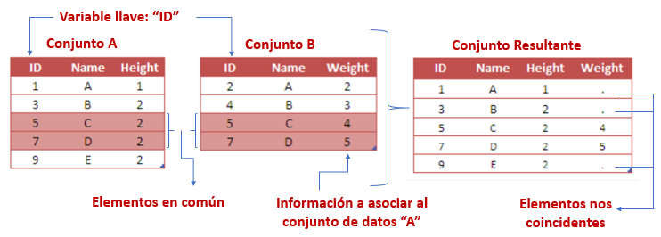

Capítulo 3 Tidyverse
La compañía Rstudio ha desarrollado un conjunto de librerías que revolucionó la programación en R. Este conjunto de librerías permite al usuario mayor orden, legibilidad e intuición a la hora de escribir y leer código. El conjunto de librerías lleva por nombre: TIDYVERSE.
En este capítulo se estudiarán las distintas librerías que componen este conjunto. Cada una de las librerías puede usarse de modo independiente. En caso de que el usuario lo prefiera, puede disponer de todas las librerías al mandar ejecutar la función:
library(tidyverse)## ── Attaching packages ─────────────────────────────────────── tidyverse 1.3.2 ──
## ✔ ggplot2 3.3.6 ✔ purrr 0.3.4
## ✔ tibble 3.1.8 ✔ dplyr 1.0.9
## ✔ tidyr 1.2.0 ✔ stringr 1.4.0
## ✔ readr 2.1.2 ✔ forcats 0.5.1
## ── Conflicts ────────────────────────────────────────── tidyverse_conflicts() ──
## ✖ dplyr::filter() masks stats::filter()
## ✖ dplyr::lag() masks stats::lag()3.1 Lectura de archivos
Usualmente, no creamos los datos desde la sesión de R, sino que a través de un archivo externo o una base de datos se realiza la lectura de datos. Los más comunes son:

3.1.1 Archivos csv
A la hora de importar conjuntos de datos en R, uno de los formatos más habituales en los que hallamos información es en archivos separados por comas (comma separated values), cuya extensión suele ser .csv. En ellos encontramos múltiples líneas que recogen la tabla de interés, y en las cuales los valores aparecen, de manera consecutiva, separados por el carácter ,.
Para importar este tipo de archivos en nuestra sesión de R, se utiliza la función read_csv(). Para acceder a su documentación utilizamos el comando ?read_csv.
El único argumento que debemos de pasar a esta función de manera obligatoria, es file, el nombre o la ruta completa del archivo que pretendemos importar.
library(readr)
read_csv(
file,
col_names = TRUE,
col_types = NULL,
locale = default_locale(),
na = c("", "NA"),
quoted_na = TRUE,
quote = "\"",
comment = "")La paquetería readr fue desarrollada recientemente para lidiar con la lectura de archivos grandes rápidamente. El paquete proporciona reemplazos para funciones como read.table(), read.csv() entre otras. Esta paquetería proporciona funciones que suelen ser mucho más rápidas que las funciones base que proporciona R.

Ventajas de readr:
Por lo general, son mucho más rápidos (~ 10x) que sus funciones equivalentes.
Producen tibbles:
- No convierten vectores de caracteres en factores.
- No usan nombres de filas ni modifican los nombres de columnas.
Reproducibilidad
No convierte, automáticamente, las columnas con cadenas de caracteres a factores, como sí hacen por defecto las otras funciones base de R.
Reconoce ocho clases diferentes de datos (enteros, lógicos, etc.), dejando el resto como cadenas de caracteres.
Veamos un ejemplo:
La base de datos llamada AmesHousing contiene un conjunto de datos con información de la Oficina del Tasador de Ames utilizada para calcular los valores tasados para las propiedades residenciales individuales vendidas en Ames, Iowa, de 2006 a 2010. FUENTES: Ames, Oficina del Tasador de Iowa.
Pueden descargar los datos para la clase aquí
base <- read.csv("data/ames.csv")
head(base, 2)## MS_SubClass MS_Zoning Lot_Frontage
## 1 One_Story_1946_and_Newer_All_Styles Residential_Low_Density 141
## 2 One_Story_1946_and_Newer_All_Styles Residential_High_Density 80
## Lot_Area Street Alley Lot_Shape Land_Contour Utilities
## 1 31770 Pave No_Alley_Access Slightly_Irregular Lvl AllPub
## 2 11622 Pave No_Alley_Access Regular Lvl AllPub
## Lot_Config Land_Slope Neighborhood Condition_1 Condition_2 Bldg_Type
## 1 Corner Gtl North_Ames Norm Norm OneFam
## 2 Inside Gtl North_Ames Feedr Norm OneFam
## House_Style Overall_Cond Year_Built Year_Remod_Add Roof_Style Roof_Matl
## 1 One_Story Average 1960 1960 Hip CompShg
## 2 One_Story Above_Average 1961 1961 Gable CompShg
## Exterior_1st Exterior_2nd Mas_Vnr_Type Mas_Vnr_Area Exter_Cond Foundation
## 1 BrkFace Plywood Stone 112 Typical CBlock
## 2 VinylSd VinylSd None 0 Typical CBlock
## Bsmt_Cond Bsmt_Exposure BsmtFin_Type_1 BsmtFin_SF_1 BsmtFin_Type_2
## 1 Good Gd BLQ 2 Unf
## 2 Typical No Rec 6 LwQ
## BsmtFin_SF_2 Bsmt_Unf_SF Total_Bsmt_SF Heating Heating_QC Central_Air
## 1 0 441 1080 GasA Fair Y
## 2 144 270 882 GasA Typical Y
## Electrical First_Flr_SF Second_Flr_SF Gr_Liv_Area Bsmt_Full_Bath
## 1 SBrkr 1656 0 1656 1
## 2 SBrkr 896 0 896 0
## Bsmt_Half_Bath Full_Bath Half_Bath Bedroom_AbvGr Kitchen_AbvGr TotRms_AbvGrd
## 1 0 1 0 3 1 7
## 2 0 1 0 2 1 5
## Functional Fireplaces Garage_Type Garage_Finish Garage_Cars Garage_Area
## 1 Typ 2 Attchd Fin 2 528
## 2 Typ 0 Attchd Unf 1 730
## Garage_Cond Paved_Drive Wood_Deck_SF Open_Porch_SF Enclosed_Porch
## 1 Typical Partial_Pavement 210 62 0
## 2 Typical Paved 140 0 0
## Three_season_porch Screen_Porch Pool_Area Pool_QC Fence
## 1 0 0 0 No_Pool No_Fence
## 2 0 120 0 No_Pool Minimum_Privacy
## Misc_Feature Misc_Val Mo_Sold Year_Sold Sale_Type Sale_Condition Sale_Price
## 1 None 0 5 2010 WD Normal 215000
## 2 None 0 6 2010 WD Normal 105000
## Longitude Latitude
## 1 -93.61975 42.05403
## 2 -93.61976 42.05301tidy <- read_csv("data/ames.csv")## Rows: 2930 Columns: 74
## ── Column specification ────────────────────────────────────────────────────────
## Delimiter: ","
## chr (40): MS_SubClass, MS_Zoning, Street, Alley, Lot_Shape, Land_Contour, Ut...
## dbl (34): Lot_Frontage, Lot_Area, Year_Built, Year_Remod_Add, Mas_Vnr_Area, ...
##
## ℹ Use `spec()` to retrieve the full column specification for this data.
## ℹ Specify the column types or set `show_col_types = FALSE` to quiet this message.head(tidy, 2)## # A tibble: 2 × 74
## MS_SubC…¹ MS_Zo…² Lot_F…³ Lot_A…⁴ Street Alley Lot_S…⁵ Land_…⁶ Utili…⁷ Lot_C…⁸
## <chr> <chr> <dbl> <dbl> <chr> <chr> <chr> <chr> <chr> <chr>
## 1 One_Stor… Reside… 141 31770 Pave No_A… Slight… Lvl AllPub Corner
## 2 One_Stor… Reside… 80 11622 Pave No_A… Regular Lvl AllPub Inside
## # … with 64 more variables: Land_Slope <chr>, Neighborhood <chr>,
## # Condition_1 <chr>, Condition_2 <chr>, Bldg_Type <chr>, House_Style <chr>,
## # Overall_Cond <chr>, Year_Built <dbl>, Year_Remod_Add <dbl>,
## # Roof_Style <chr>, Roof_Matl <chr>, Exterior_1st <chr>, Exterior_2nd <chr>,
## # Mas_Vnr_Type <chr>, Mas_Vnr_Area <dbl>, Exter_Cond <chr>, Foundation <chr>,
## # Bsmt_Cond <chr>, Bsmt_Exposure <chr>, BsmtFin_Type_1 <chr>,
## # BsmtFin_SF_1 <dbl>, BsmtFin_Type_2 <chr>, BsmtFin_SF_2 <dbl>, …¿Y si el archivo que necesitamos leer esta en excel?
3.1.2 Archivos txt
Uno de los archivos más comunes es el .txt. La librería readr también cuenta con funciones que permiten leer fácilmente los datos contenidos en formato tabular.
ames_txt <- read_delim("data/ames.txt", delim = ";", col_names = TRUE)## Rows: 2930 Columns: 74
## ── Column specification ────────────────────────────────────────────────────────
## Delimiter: ";"
## chr (40): MS_SubClass, MS_Zoning, Street, Alley, Lot_Shape, Land_Contour, Ut...
## dbl (34): Lot_Frontage, Lot_Area, Year_Built, Year_Remod_Add, Mas_Vnr_Area, ...
##
## ℹ Use `spec()` to retrieve the full column specification for this data.
## ℹ Specify the column types or set `show_col_types = FALSE` to quiet this message.head(ames_txt, 2)## # A tibble: 2 × 74
## MS_SubC…¹ MS_Zo…² Lot_F…³ Lot_A…⁴ Street Alley Lot_S…⁵ Land_…⁶ Utili…⁷ Lot_C…⁸
## <chr> <chr> <dbl> <dbl> <chr> <chr> <chr> <chr> <chr> <chr>
## 1 One_Stor… Reside… 141 31770 Pave No_A… Slight… Lvl AllPub Corner
## 2 One_Stor… Reside… 80 11622 Pave No_A… Regular Lvl AllPub Inside
## # … with 64 more variables: Land_Slope <chr>, Neighborhood <chr>,
## # Condition_1 <chr>, Condition_2 <chr>, Bldg_Type <chr>, House_Style <chr>,
## # Overall_Cond <chr>, Year_Built <dbl>, Year_Remod_Add <dbl>,
## # Roof_Style <chr>, Roof_Matl <chr>, Exterior_1st <chr>, Exterior_2nd <chr>,
## # Mas_Vnr_Type <chr>, Mas_Vnr_Area <dbl>, Exter_Cond <chr>, Foundation <chr>,
## # Bsmt_Cond <chr>, Bsmt_Exposure <chr>, BsmtFin_Type_1 <chr>,
## # BsmtFin_SF_1 <dbl>, BsmtFin_Type_2 <chr>, BsmtFin_SF_2 <dbl>, …La función read_delim() funciona para leer archivos con diferentes delimitadores posibles, es decir, es posible especificar si las columnas están separadas por espacios, comas, punto y coma, tabulador o algún otro delimitador (““,”,“,”;“,”, “@”).
Adicionalmente, se puede especificar si el archivo contiene encabezado, si existen renglones a saltar, codificación, tipo de variable y muchas más opciones. Todos estos detalles pueden consultarse en la documentación de ayuda.
3.1.3 Archivos xls y xlsx
La paquetería readxl facilita la obtención de datos tabulares de archivos de Excel. Admite tanto el formato .xls heredado como el formato .xlsx moderno basado en XML.
Esta paquetería pone a disposición las siguientes funciones:
read_xlsx()lee un archivo con extensión xlsx.
read_xlsx(
path,
sheet = NULL,
range = NULL,
col_names = TRUE,
col_types = NULL,
na = "",
trim_ws = TRUE,
skip = 0,
n_max = Inf,
guess_max = min(1000, n_max),
progress = readxl_progress(),
.name_repair = "unique"
)read_xls()lee un archivo con extensión xls.
read_xls(
path,
sheet = NULL,
range = NULL,
col_names = TRUE,
col_types = NULL,
na = "",
trim_ws = TRUE,
skip = 0,
n_max = Inf,
guess_max = min(1000, n_max),
progress = readxl_progress(),
.name_repair = "unique"
)read_excel()determina si el archivo es de tipo xls o xlsx para después llamar a una de las funciones mencionadas anteriormente.
read_excel(
path,
sheet = NULL,
range = NULL,
col_names = TRUE,
col_types = NULL,
na = "",
trim_ws = TRUE,
skip = 0,
n_max = Inf,
guess_max = min(1000, n_max),
progress = readxl_progress(),
.name_repair = "unique"
)EJERCICIO: Leer archivo excel de la carpeta del curso
3.1.4 Archivos json
Se utiliza la función fromJSON de la paquetería jsonlite
library(jsonlite)##
## Attaching package: 'jsonlite'## The following object is masked from 'package:purrr':
##
## flattenbase_json <- jsonlite::fromJSON("data/ames.json")
head(base_json, 2)## MS_SubClass MS_Zoning Lot_Frontage
## 1 One_Story_1946_and_Newer_All_Styles Residential_Low_Density 141
## 2 One_Story_1946_and_Newer_All_Styles Residential_High_Density 80
## Lot_Area Street Alley Lot_Shape Land_Contour Utilities
## 1 31770 Pave No_Alley_Access Slightly_Irregular Lvl AllPub
## 2 11622 Pave No_Alley_Access Regular Lvl AllPub
## Lot_Config Land_Slope Neighborhood Condition_1 Condition_2 Bldg_Type
## 1 Corner Gtl North_Ames Norm Norm OneFam
## 2 Inside Gtl North_Ames Feedr Norm OneFam
## House_Style Overall_Cond Year_Built Year_Remod_Add Roof_Style Roof_Matl
## 1 One_Story Average 1960 1960 Hip CompShg
## 2 One_Story Above_Average 1961 1961 Gable CompShg
## Exterior_1st Exterior_2nd Mas_Vnr_Type Mas_Vnr_Area Exter_Cond Foundation
## 1 BrkFace Plywood Stone 112 Typical CBlock
## 2 VinylSd VinylSd None 0 Typical CBlock
## Bsmt_Cond Bsmt_Exposure BsmtFin_Type_1 BsmtFin_SF_1 BsmtFin_Type_2
## 1 Good Gd BLQ 2 Unf
## 2 Typical No Rec 6 LwQ
## BsmtFin_SF_2 Bsmt_Unf_SF Total_Bsmt_SF Heating Heating_QC Central_Air
## 1 0 441 1080 GasA Fair Y
## 2 144 270 882 GasA Typical Y
## Electrical First_Flr_SF Second_Flr_SF Gr_Liv_Area Bsmt_Full_Bath
## 1 SBrkr 1656 0 1656 1
## 2 SBrkr 896 0 896 0
## Bsmt_Half_Bath Full_Bath Half_Bath Bedroom_AbvGr Kitchen_AbvGr TotRms_AbvGrd
## 1 0 1 0 3 1 7
## 2 0 1 0 2 1 5
## Functional Fireplaces Garage_Type Garage_Finish Garage_Cars Garage_Area
## 1 Typ 2 Attchd Fin 2 528
## 2 Typ 0 Attchd Unf 1 730
## Garage_Cond Paved_Drive Wood_Deck_SF Open_Porch_SF Enclosed_Porch
## 1 Typical Partial_Pavement 210 62 0
## 2 Typical Paved 140 0 0
## Three_season_porch Screen_Porch Pool_Area Pool_QC Fence
## 1 0 0 0 No_Pool No_Fence
## 2 0 120 0 No_Pool Minimum_Privacy
## Misc_Feature Misc_Val Mo_Sold Year_Sold Sale_Type Sale_Condition Sale_Price
## 1 None 0 5 2010 WD Normal 215000
## 2 None 0 6 2010 WD Normal 105000
## Longitude Latitude
## 1 -93.6198 42.054
## 2 -93.6198 42.0533.1.5 Archivos rds
Un tipo de archivo que resulta de particular interés, es el .RDS. Este archivo comprime cualquier objeto o resultado que sea usado o producido en R. Uno puede almacenar el objeto de interés de la siguiente manera:
saveRDS(base_json, "data/ames.rds")Puede observarse que en el explorador de archivos se encuentra ahora el nuevo archivo con extensión .rds, el cual puede ser posteriormente incorporado a una sesión de R para seguir trabajando con él.
base_rds <- readRDS("data/ames.rds")Algunas de las grandes ventajas que tiene almacenar los archivos en formato rds, son las siguientes:
No es necesario volver a ejecutar procesos largos cuando ya se ha logrado realizar una vez.
El tiempo de lectura de la información es considerablemente más rápido.
3.1.6 Bases de Datos
En muchos de los casos la información estará dentro de un Sistema Manejador de Bases de Datos, existen bibliotecas que nos permiten establecer las conexiones con ellas, algunos ejemplos son:
- ODBC
- DBI
- JDBC
Un ejemplo con un SMBD como Oracle:
3.1.7 Oracle Database
Configuración de conexión:
Se necesitan seis configuraciones para realizar una conexión:
- Controlador : consulte la sección Controladores para obtener más información
- Url : una ruta de red al servidor de la base de datos.
- Base de datos : el nombre de la base de datos.
- Usuario : el ID de red del usuario o la cuenta local del servidor
- Contraseña : la contraseña de la cuenta
- Puerto : debe establecerse en 1526 o 1521
Para establecer la conexión con la base de datos:
library(DBI)
library(RJDBC)
jdbcDriver = JDBC(driverClass = "oracle.jdbc.OracleDriver","c:/Drivers/Oracle/ojdbc8.jar")
con <- dbConnect(
jdbcDriver,
url = "jdbc:oracle:thin:@//Hostname:Port/Service_Name"
user = rstudioapi::askForPassword("Database user"),
password = rstudioapi::askForPassword("Database password"),
dbname = "Data Base Name"
)
sql_translation.JDBCConnection <- dbplyr:::sql_translation.Oracle
sql_select.JDBCConnection <- dbplyr:::sql_query_select.Oracle
sql_subquery.JDBCConnection <- dbplyr:::sql_query_wrap.Oracle
dbExistsTable(jdbcConnection, "nombre_tabla") # Probar si hay conexión con la tablaInformación sobre la base de datos:
El paquete odbc le brinda herramientas para explorar objetos y columnas en la base de datos.
# Top level objects
odbcListObjects(con)
# Tables in a schema
odbcListObjects(con, catalog = "mydb", schema = "dbo")
# Columns in a table
odbcListColumns(con, catalog = "mydb", schema = "dbo", table = "cars")
# Database structure
odbcListObjectTypes(con)Consultas con SQL: Para consultas interactivas, utilice dbGetQuery() para enviar una consulta y obtener los resultados. Para obtener los resultados por separado, utilice dbSendQuery() y dbFetch(). El argumento n en dbFetch() se puede utilizar para obtener resultados parciales.
# Return the results for an arbitrary query
dbGetQuery(con, "SELECT speed, dist FROM cars")
# Fetch the first 100 records
query <- dbSendQuery(con, "SELECT speed, dist FROM cars")
dbFetch(query, n = 10)
dbClearResult(query)Puedes usar los ejemplos anteriores para probar con diferentes consultas y bases de datos.
Tengamos un ejemplo de manera local:
remotes::install_version("RSQLite")library(dplyr)
library(dbplyr)
library(RSQLite)
con <- src_memdb()
copy_to(con, storms, overwrite = T)
copy_to(con, mtcars, overwrite = T)
tbl_storms <- tbl(con, "storms")
tbl_storms## # Source: table<storms> [?? x 13]
## # Database: sqlite 3.39.1 [:memory:]
## name year month day hour lat long status categ…¹ wind press…²
## <chr> <dbl> <dbl> <int> <dbl> <dbl> <dbl> <chr> <chr> <int> <int>
## 1 Amy 1975 6 27 0 27.5 -79 tropical dep… -1 25 1013
## 2 Amy 1975 6 27 6 28.5 -79 tropical dep… -1 25 1013
## 3 Amy 1975 6 27 12 29.5 -79 tropical dep… -1 25 1013
## 4 Amy 1975 6 27 18 30.5 -79 tropical dep… -1 25 1013
## 5 Amy 1975 6 28 0 31.5 -78.8 tropical dep… -1 25 1012
## 6 Amy 1975 6 28 6 32.4 -78.7 tropical dep… -1 25 1012
## 7 Amy 1975 6 28 12 33.3 -78 tropical dep… -1 25 1011
## 8 Amy 1975 6 28 18 34 -77 tropical dep… -1 30 1006
## 9 Amy 1975 6 29 0 34.4 -75.8 tropical sto… 0 35 1004
## 10 Amy 1975 6 29 6 34 -74.8 tropical sto… 0 40 1002
## # … with more rows, 2 more variables: tropicalstorm_force_diameter <int>,
## # hurricane_force_diameter <int>, and abbreviated variable names ¹category,
## # ²pressuretbl_mtcars <- tbl(con, "mtcars")
tbl_mtcars## # Source: table<mtcars> [?? x 11]
## # Database: sqlite 3.39.1 [:memory:]
## mpg cyl disp hp drat wt qsec vs am gear carb
## <dbl> <dbl> <dbl> <dbl> <dbl> <dbl> <dbl> <dbl> <dbl> <dbl> <dbl>
## 1 21 6 160 110 3.9 2.62 16.5 0 1 4 4
## 2 21 6 160 110 3.9 2.88 17.0 0 1 4 4
## 3 22.8 4 108 93 3.85 2.32 18.6 1 1 4 1
## 4 21.4 6 258 110 3.08 3.22 19.4 1 0 3 1
## 5 18.7 8 360 175 3.15 3.44 17.0 0 0 3 2
## 6 18.1 6 225 105 2.76 3.46 20.2 1 0 3 1
## 7 14.3 8 360 245 3.21 3.57 15.8 0 0 3 4
## 8 24.4 4 147. 62 3.69 3.19 20 1 0 4 2
## 9 22.8 4 141. 95 3.92 3.15 22.9 1 0 4 2
## 10 19.2 6 168. 123 3.92 3.44 18.3 1 0 4 4
## # … with more rowsExiste otra metodología de conexión, la cual puede encontrarse en la siguiente documentación
3.2 Consultas de datos
Ahora que ya se ha estudiado la manera de cargar datos, aprenderemos como manipularlos con dplyr. El paquete dplyr proporciona un conjunto de funciones muy útiles para manipular data-frames y así reducir el número de repeticiones, la probabilidad de cometer errores y el número de caracteres que hay que escribir. Como valor extra, podemos encontrar que la gramática de dplyr es más fácil de entender.
Revisaremos algunas de sus funciones más usadas (verbos), así como el uso de pipes (%>%) para combinarlas.
select()
filter()
arrange()
mutate()
summarise()
join()
group_by()
Primero tenemos que instalar y cargar la paquetería (parte de tidyverse):
# install.packages("dplyr")
library(dplyr)
library(readr)Usaremos el dataset AmesHousing que se proporcionó en el capítulo anterior (el alumno puede hacer el ejercicio con datos propios)
ames_housing <- read_csv("data/ames.csv")
glimpse(ames_housing)## Rows: 2,930
## Columns: 74
## $ MS_SubClass <chr> "One_Story_1946_and_Newer_All_Styles", "One_Story_1…
## $ MS_Zoning <chr> "Residential_Low_Density", "Residential_High_Densit…
## $ Lot_Frontage <dbl> 141, 80, 81, 93, 74, 78, 41, 43, 39, 60, 75, 0, 63,…
## $ Lot_Area <dbl> 31770, 11622, 14267, 11160, 13830, 9978, 4920, 5005…
## $ Street <chr> "Pave", "Pave", "Pave", "Pave", "Pave", "Pave", "Pa…
## $ Alley <chr> "No_Alley_Access", "No_Alley_Access", "No_Alley_Acc…
## $ Lot_Shape <chr> "Slightly_Irregular", "Regular", "Slightly_Irregula…
## $ Land_Contour <chr> "Lvl", "Lvl", "Lvl", "Lvl", "Lvl", "Lvl", "Lvl", "H…
## $ Utilities <chr> "AllPub", "AllPub", "AllPub", "AllPub", "AllPub", "…
## $ Lot_Config <chr> "Corner", "Inside", "Corner", "Corner", "Inside", "…
## $ Land_Slope <chr> "Gtl", "Gtl", "Gtl", "Gtl", "Gtl", "Gtl", "Gtl", "G…
## $ Neighborhood <chr> "North_Ames", "North_Ames", "North_Ames", "North_Am…
## $ Condition_1 <chr> "Norm", "Feedr", "Norm", "Norm", "Norm", "Norm", "N…
## $ Condition_2 <chr> "Norm", "Norm", "Norm", "Norm", "Norm", "Norm", "No…
## $ Bldg_Type <chr> "OneFam", "OneFam", "OneFam", "OneFam", "OneFam", "…
## $ House_Style <chr> "One_Story", "One_Story", "One_Story", "One_Story",…
## $ Overall_Cond <chr> "Average", "Above_Average", "Above_Average", "Avera…
## $ Year_Built <dbl> 1960, 1961, 1958, 1968, 1997, 1998, 2001, 1992, 199…
## $ Year_Remod_Add <dbl> 1960, 1961, 1958, 1968, 1998, 1998, 2001, 1992, 199…
## $ Roof_Style <chr> "Hip", "Gable", "Hip", "Hip", "Gable", "Gable", "Ga…
## $ Roof_Matl <chr> "CompShg", "CompShg", "CompShg", "CompShg", "CompSh…
## $ Exterior_1st <chr> "BrkFace", "VinylSd", "Wd Sdng", "BrkFace", "VinylS…
## $ Exterior_2nd <chr> "Plywood", "VinylSd", "Wd Sdng", "BrkFace", "VinylS…
## $ Mas_Vnr_Type <chr> "Stone", "None", "BrkFace", "None", "None", "BrkFac…
## $ Mas_Vnr_Area <dbl> 112, 0, 108, 0, 0, 20, 0, 0, 0, 0, 0, 0, 0, 0, 0, 6…
## $ Exter_Cond <chr> "Typical", "Typical", "Typical", "Typical", "Typica…
## $ Foundation <chr> "CBlock", "CBlock", "CBlock", "CBlock", "PConc", "P…
## $ Bsmt_Cond <chr> "Good", "Typical", "Typical", "Typical", "Typical",…
## $ Bsmt_Exposure <chr> "Gd", "No", "No", "No", "No", "No", "Mn", "No", "No…
## $ BsmtFin_Type_1 <chr> "BLQ", "Rec", "ALQ", "ALQ", "GLQ", "GLQ", "GLQ", "A…
## $ BsmtFin_SF_1 <dbl> 2, 6, 1, 1, 3, 3, 3, 1, 3, 7, 7, 1, 7, 3, 3, 1, 3, …
## $ BsmtFin_Type_2 <chr> "Unf", "LwQ", "Unf", "Unf", "Unf", "Unf", "Unf", "U…
## $ BsmtFin_SF_2 <dbl> 0, 144, 0, 0, 0, 0, 0, 0, 0, 0, 0, 0, 0, 0, 1120, 0…
## $ Bsmt_Unf_SF <dbl> 441, 270, 406, 1045, 137, 324, 722, 1017, 415, 994,…
## $ Total_Bsmt_SF <dbl> 1080, 882, 1329, 2110, 928, 926, 1338, 1280, 1595, …
## $ Heating <chr> "GasA", "GasA", "GasA", "GasA", "GasA", "GasA", "Ga…
## $ Heating_QC <chr> "Fair", "Typical", "Typical", "Excellent", "Good", …
## $ Central_Air <chr> "Y", "Y", "Y", "Y", "Y", "Y", "Y", "Y", "Y", "Y", "…
## $ Electrical <chr> "SBrkr", "SBrkr", "SBrkr", "SBrkr", "SBrkr", "SBrkr…
## $ First_Flr_SF <dbl> 1656, 896, 1329, 2110, 928, 926, 1338, 1280, 1616, …
## $ Second_Flr_SF <dbl> 0, 0, 0, 0, 701, 678, 0, 0, 0, 776, 892, 0, 676, 0,…
## $ Gr_Liv_Area <dbl> 1656, 896, 1329, 2110, 1629, 1604, 1338, 1280, 1616…
## $ Bsmt_Full_Bath <dbl> 1, 0, 0, 1, 0, 0, 1, 0, 1, 0, 0, 1, 0, 1, 1, 1, 0, …
## $ Bsmt_Half_Bath <dbl> 0, 0, 0, 0, 0, 0, 0, 0, 0, 0, 0, 0, 0, 0, 0, 0, 0, …
## $ Full_Bath <dbl> 1, 1, 1, 2, 2, 2, 2, 2, 2, 2, 2, 2, 2, 1, 1, 3, 2, …
## $ Half_Bath <dbl> 0, 0, 1, 1, 1, 1, 0, 0, 0, 1, 1, 0, 1, 1, 1, 1, 0, …
## $ Bedroom_AbvGr <dbl> 3, 2, 3, 3, 3, 3, 2, 2, 2, 3, 3, 3, 3, 2, 1, 4, 4, …
## $ Kitchen_AbvGr <dbl> 1, 1, 1, 1, 1, 1, 1, 1, 1, 1, 1, 1, 1, 1, 1, 1, 1, …
## $ TotRms_AbvGrd <dbl> 7, 5, 6, 8, 6, 7, 6, 5, 5, 7, 7, 6, 7, 5, 4, 12, 8,…
## $ Functional <chr> "Typ", "Typ", "Typ", "Typ", "Typ", "Typ", "Typ", "T…
## $ Fireplaces <dbl> 2, 0, 0, 2, 1, 1, 0, 0, 1, 1, 1, 0, 1, 1, 0, 1, 0, …
## $ Garage_Type <chr> "Attchd", "Attchd", "Attchd", "Attchd", "Attchd", "…
## $ Garage_Finish <chr> "Fin", "Unf", "Unf", "Fin", "Fin", "Fin", "Fin", "R…
## $ Garage_Cars <dbl> 2, 1, 1, 2, 2, 2, 2, 2, 2, 2, 2, 2, 2, 2, 2, 3, 2, …
## $ Garage_Area <dbl> 528, 730, 312, 522, 482, 470, 582, 506, 608, 442, 4…
## $ Garage_Cond <chr> "Typical", "Typical", "Typical", "Typical", "Typica…
## $ Paved_Drive <chr> "Partial_Pavement", "Paved", "Paved", "Paved", "Pav…
## $ Wood_Deck_SF <dbl> 210, 140, 393, 0, 212, 360, 0, 0, 237, 140, 157, 48…
## $ Open_Porch_SF <dbl> 62, 0, 36, 0, 34, 36, 0, 82, 152, 60, 84, 21, 75, 0…
## $ Enclosed_Porch <dbl> 0, 0, 0, 0, 0, 0, 170, 0, 0, 0, 0, 0, 0, 0, 0, 0, 0…
## $ Three_season_porch <dbl> 0, 0, 0, 0, 0, 0, 0, 0, 0, 0, 0, 0, 0, 0, 0, 0, 0, …
## $ Screen_Porch <dbl> 0, 120, 0, 0, 0, 0, 0, 144, 0, 0, 0, 0, 0, 0, 140, …
## $ Pool_Area <dbl> 0, 0, 0, 0, 0, 0, 0, 0, 0, 0, 0, 0, 0, 0, 0, 0, 0, …
## $ Pool_QC <chr> "No_Pool", "No_Pool", "No_Pool", "No_Pool", "No_Poo…
## $ Fence <chr> "No_Fence", "Minimum_Privacy", "No_Fence", "No_Fenc…
## $ Misc_Feature <chr> "None", "None", "Gar2", "None", "None", "None", "No…
## $ Misc_Val <dbl> 0, 0, 12500, 0, 0, 0, 0, 0, 0, 0, 0, 500, 0, 0, 0, …
## $ Mo_Sold <dbl> 5, 6, 6, 4, 3, 6, 4, 1, 3, 6, 4, 3, 5, 2, 6, 6, 6, …
## $ Year_Sold <dbl> 2010, 2010, 2010, 2010, 2010, 2010, 2010, 2010, 201…
## $ Sale_Type <chr> "WD", "WD", "WD", "WD", "WD", "WD", "WD", "WD", "WD…
## $ Sale_Condition <chr> "Normal", "Normal", "Normal", "Normal", "Normal", "…
## $ Sale_Price <dbl> 215000, 105000, 172000, 244000, 189900, 195500, 213…
## $ Longitude <dbl> -93.61975, -93.61976, -93.61939, -93.61732, -93.638…
## $ Latitude <dbl> 42.05403, 42.05301, 42.05266, 42.05125, 42.06090, 4…3.2.1 Seleccionar columnas
Observamos que nuestros datos tienen 2,930 observaciones y 74 variables, con select() podemos seleccionar las variables que se indiquen.
ames_housing %>% select(Lot_Area, Neighborhood, Year_Sold, Sale_Price)## # A tibble: 2,930 × 4
## Lot_Area Neighborhood Year_Sold Sale_Price
## <dbl> <chr> <dbl> <dbl>
## 1 31770 North_Ames 2010 215000
## 2 11622 North_Ames 2010 105000
## 3 14267 North_Ames 2010 172000
## 4 11160 North_Ames 2010 244000
## 5 13830 Gilbert 2010 189900
## 6 9978 Gilbert 2010 195500
## 7 4920 Stone_Brook 2010 213500
## 8 5005 Stone_Brook 2010 191500
## 9 5389 Stone_Brook 2010 236500
## 10 7500 Gilbert 2010 189000
## # … with 2,920 more rows¡¡ RECORDAR !!
El operador pipe (%>%) se usa para conectar un elemento con una función o acción a realizar. En este caso solo se indica que en los datos de ames se seleccionan 4 variables.
Con select() y contains() podemos seleccionar variables con alguna cadena de texto.
ames_housing %>% select(contains("Area"))## # A tibble: 2,930 × 5
## Lot_Area Mas_Vnr_Area Gr_Liv_Area Garage_Area Pool_Area
## <dbl> <dbl> <dbl> <dbl> <dbl>
## 1 31770 112 1656 528 0
## 2 11622 0 896 730 0
## 3 14267 108 1329 312 0
## 4 11160 0 2110 522 0
## 5 13830 0 1629 482 0
## 6 9978 20 1604 470 0
## 7 4920 0 1338 582 0
## 8 5005 0 1280 506 0
## 9 5389 0 1616 608 0
## 10 7500 0 1804 442 0
## # … with 2,920 more rowsDe igual manera, con select(), ends_with y start_with() podemos seleccionar que inicien o terminen con alguna cadena de texto.
ames_housing %>% select(starts_with("Garage"))## # A tibble: 2,930 × 5
## Garage_Type Garage_Finish Garage_Cars Garage_Area Garage_Cond
## <chr> <chr> <dbl> <dbl> <chr>
## 1 Attchd Fin 2 528 Typical
## 2 Attchd Unf 1 730 Typical
## 3 Attchd Unf 1 312 Typical
## 4 Attchd Fin 2 522 Typical
## 5 Attchd Fin 2 482 Typical
## 6 Attchd Fin 2 470 Typical
## 7 Attchd Fin 2 582 Typical
## 8 Attchd RFn 2 506 Typical
## 9 Attchd RFn 2 608 Typical
## 10 Attchd Fin 2 442 Typical
## # … with 2,920 more rowsFunciones útiles para select():
contains(): Selecciona variables cuyo nombre contiene la cadena de texto.
ends_with(): Selecciona variables cuyo nombre termina con la cadena de caracteres.
everything(): Selecciona todas las columnas.
matches(): Selecciona las variables cuyos nombres coinciden con una expresión regular.
num_range(): Selecciona las variables por posición.
start_with(): Selecciona variables cuyos nombres empiezan con la cadena de caracteres.
any_of: Selecciona cualquiera de estas variables, en caso de existir
EJERCICIO:
- Crear con datos propios una consulta de columnas usando como variable auxiliar cada una de las listadas anteriormente. Será suficiente con realizar un ejemplo de cada una.
3.2.2 Filtrar observaciones
La función filter() nos permite filtrar filas según una condición, primero notemos que la variable Sale_Condition tiene distintas categorías.
table(ames_housing$Sale_Condition)##
## Abnorml AdjLand Alloca Family Normal Partial
## 190 12 24 46 2413 245¡¡ SPOILER !!
En un modelo predictivo de Machine Learning, no es correcto agregar columnas cuyo valor es conocido hasta el momento de la observación. Es decir, no deben agregarse variables que no se conozca su valor al momento de la predicción, como es el caso de condición de venta.
Ahora usaremos la función filter para quedarnos solo con las observaciones con condición de venta “normal”.
ames_housing %>% filter(Sale_Condition == "Normal")## # A tibble: 2,413 × 74
## MS_Sub…¹ MS_Zo…² Lot_F…³ Lot_A…⁴ Street Alley Lot_S…⁵ Land_…⁶ Utili…⁷ Lot_C…⁸
## <chr> <chr> <dbl> <dbl> <chr> <chr> <chr> <chr> <chr> <chr>
## 1 One_Sto… Reside… 141 31770 Pave No_A… Slight… Lvl AllPub Corner
## 2 One_Sto… Reside… 80 11622 Pave No_A… Regular Lvl AllPub Inside
## 3 One_Sto… Reside… 81 14267 Pave No_A… Slight… Lvl AllPub Corner
## 4 One_Sto… Reside… 93 11160 Pave No_A… Regular Lvl AllPub Corner
## 5 Two_Sto… Reside… 74 13830 Pave No_A… Slight… Lvl AllPub Inside
## 6 Two_Sto… Reside… 78 9978 Pave No_A… Slight… Lvl AllPub Inside
## 7 One_Sto… Reside… 41 4920 Pave No_A… Regular Lvl AllPub Inside
## 8 One_Sto… Reside… 43 5005 Pave No_A… Slight… HLS AllPub Inside
## 9 One_Sto… Reside… 39 5389 Pave No_A… Slight… Lvl AllPub Inside
## 10 Two_Sto… Reside… 60 7500 Pave No_A… Regular Lvl AllPub Inside
## # … with 2,403 more rows, 64 more variables: Land_Slope <chr>,
## # Neighborhood <chr>, Condition_1 <chr>, Condition_2 <chr>, Bldg_Type <chr>,
## # House_Style <chr>, Overall_Cond <chr>, Year_Built <dbl>,
## # Year_Remod_Add <dbl>, Roof_Style <chr>, Roof_Matl <chr>,
## # Exterior_1st <chr>, Exterior_2nd <chr>, Mas_Vnr_Type <chr>,
## # Mas_Vnr_Area <dbl>, Exter_Cond <chr>, Foundation <chr>, Bsmt_Cond <chr>,
## # Bsmt_Exposure <chr>, BsmtFin_Type_1 <chr>, BsmtFin_SF_1 <dbl>, …También se puede usar para filtrar variables numéricas:
ames_housing %>% filter(Lot_Area > 1000 & Sale_Price >= 150000)## # A tibble: 1,677 × 74
## MS_Sub…¹ MS_Zo…² Lot_F…³ Lot_A…⁴ Street Alley Lot_S…⁵ Land_…⁶ Utili…⁷ Lot_C…⁸
## <chr> <chr> <dbl> <dbl> <chr> <chr> <chr> <chr> <chr> <chr>
## 1 One_Sto… Reside… 141 31770 Pave No_A… Slight… Lvl AllPub Corner
## 2 One_Sto… Reside… 81 14267 Pave No_A… Slight… Lvl AllPub Corner
## 3 One_Sto… Reside… 93 11160 Pave No_A… Regular Lvl AllPub Corner
## 4 Two_Sto… Reside… 74 13830 Pave No_A… Slight… Lvl AllPub Inside
## 5 Two_Sto… Reside… 78 9978 Pave No_A… Slight… Lvl AllPub Inside
## 6 One_Sto… Reside… 41 4920 Pave No_A… Regular Lvl AllPub Inside
## 7 One_Sto… Reside… 43 5005 Pave No_A… Slight… HLS AllPub Inside
## 8 One_Sto… Reside… 39 5389 Pave No_A… Slight… Lvl AllPub Inside
## 9 Two_Sto… Reside… 60 7500 Pave No_A… Regular Lvl AllPub Inside
## 10 Two_Sto… Reside… 75 10000 Pave No_A… Slight… Lvl AllPub Corner
## # … with 1,667 more rows, 64 more variables: Land_Slope <chr>,
## # Neighborhood <chr>, Condition_1 <chr>, Condition_2 <chr>, Bldg_Type <chr>,
## # House_Style <chr>, Overall_Cond <chr>, Year_Built <dbl>,
## # Year_Remod_Add <dbl>, Roof_Style <chr>, Roof_Matl <chr>,
## # Exterior_1st <chr>, Exterior_2nd <chr>, Mas_Vnr_Type <chr>,
## # Mas_Vnr_Area <dbl>, Exter_Cond <chr>, Foundation <chr>, Bsmt_Cond <chr>,
## # Bsmt_Exposure <chr>, BsmtFin_Type_1 <chr>, BsmtFin_SF_1 <dbl>, …Notemos que en el ejemplo anterior se usa &, que ayuda a filtrar por dos condiciones.
También puede usarse | para filtrar por alguna de las dos condiciones.
ames_housing %>% filter(Lot_Area < 1000 | Sale_Price <= 150000)## # A tibble: 1,271 × 74
## MS_Sub…¹ MS_Zo…² Lot_F…³ Lot_A…⁴ Street Alley Lot_S…⁵ Land_…⁶ Utili…⁷ Lot_C…⁸
## <chr> <chr> <dbl> <dbl> <chr> <chr> <chr> <chr> <chr> <chr>
## 1 One_Sto… Reside… 80 11622 Pave No_A… Regular Lvl AllPub Inside
## 2 One_Sto… Reside… 140 19138 Pave No_A… Regular Lvl AllPub Corner
## 3 One_Sto… Reside… 0 11241 Pave No_A… Slight… Lvl AllPub CulDSac
## 4 One_Sto… Reside… 0 12537 Pave No_A… Slight… Lvl AllPub CulDSac
## 5 One_Sto… Reside… 65 8450 Pave No_A… Regular Lvl AllPub Inside
## 6 One_Sto… Reside… 70 8400 Pave No_A… Regular Lvl AllPub Corner
## 7 One_Sto… Reside… 70 10500 Pave No_A… Regular Lvl AllPub FR2
## 8 Two_Sto… Reside… 21 1680 Pave No_A… Regular Lvl AllPub Inside
## 9 Two_Sto… Reside… 21 1680 Pave No_A… Regular Lvl AllPub Inside
## 10 Two_Sto… Reside… 21 1680 Pave No_A… Regular Lvl AllPub Inside
## # … with 1,261 more rows, 64 more variables: Land_Slope <chr>,
## # Neighborhood <chr>, Condition_1 <chr>, Condition_2 <chr>, Bldg_Type <chr>,
## # House_Style <chr>, Overall_Cond <chr>, Year_Built <dbl>,
## # Year_Remod_Add <dbl>, Roof_Style <chr>, Roof_Matl <chr>,
## # Exterior_1st <chr>, Exterior_2nd <chr>, Mas_Vnr_Type <chr>,
## # Mas_Vnr_Area <dbl>, Exter_Cond <chr>, Foundation <chr>, Bsmt_Cond <chr>,
## # Bsmt_Exposure <chr>, BsmtFin_Type_1 <chr>, BsmtFin_SF_1 <dbl>, …Las condiciones pueden ser expresiones lógicas construidas mediante los operadores relacionales y lógicos:
< : Menor que
> : Mayor que
== : Igual que
<= : Menor o igual que
>= : Mayor o igual que
!= : Diferente que
%in% : Pertenece al conjunto
is.na : Es NA
!is.na : No es NA
EJERCICIO:
Practicar la función de filtro de observaciones usando los operadores auxiliares.
Concatenar el resultado de seleccionar columnas y posteriormente filtrar columnas.
3.2.3 Ordenar registros
La función arrange() se utiliza para ordenar las filas de un data frame de acuerdo a una o varias variables. Este ordenamiento puede ser ascendente o descendente.
Por defecto arrange() ordena las filas por orden ascendente:
ames_housing %>% arrange(Sale_Price)## # A tibble: 2,930 × 74
## MS_Sub…¹ MS_Zo…² Lot_F…³ Lot_A…⁴ Street Alley Lot_S…⁵ Land_…⁶ Utili…⁷ Lot_C…⁸
## <chr> <chr> <dbl> <dbl> <chr> <chr> <chr> <chr> <chr> <chr>
## 1 One_Sto… Reside… 68 9656 Pave No_A… Regular Lvl AllPub Inside
## 2 One_Sto… A_agr 80 14584 Pave No_A… Regular Low AllPub Inside
## 3 One_Sto… C_all 60 7879 Pave No_A… Regular Lvl AllPub Inside
## 4 One_Sto… Reside… 60 8088 Pave Grav… Regular Lvl AllPub Inside
## 5 One_Sto… C_all 50 9000 Pave No_A… Regular Lvl AllPub Inside
## 6 One_and… Reside… 50 5925 Pave No_A… Regular Lvl AllPub Inside
## 7 One_Sto… Reside… 50 5000 Pave No_A… Regular Low AllPub Inside
## 8 Two_Sto… C_all 50 8500 Pave Paved Regular Lvl AllPub Inside
## 9 One_Sto… C_all 72 9392 Pave No_A… Regular Lvl AllPub Corner
## 10 One_Sto… Reside… 50 5925 Pave No_A… Regular Lvl AllPub Corner
## # … with 2,920 more rows, 64 more variables: Land_Slope <chr>,
## # Neighborhood <chr>, Condition_1 <chr>, Condition_2 <chr>, Bldg_Type <chr>,
## # House_Style <chr>, Overall_Cond <chr>, Year_Built <dbl>,
## # Year_Remod_Add <dbl>, Roof_Style <chr>, Roof_Matl <chr>,
## # Exterior_1st <chr>, Exterior_2nd <chr>, Mas_Vnr_Type <chr>,
## # Mas_Vnr_Area <dbl>, Exter_Cond <chr>, Foundation <chr>, Bsmt_Cond <chr>,
## # Bsmt_Exposure <chr>, BsmtFin_Type_1 <chr>, BsmtFin_SF_1 <dbl>, …
Si las queremos ordenar de forma ascendente, lo haremos del siguiente modo:
ames_housing %>% arrange(desc(Sale_Price))## # A tibble: 2,930 × 74
## MS_Sub…¹ MS_Zo…² Lot_F…³ Lot_A…⁴ Street Alley Lot_S…⁵ Land_…⁶ Utili…⁷ Lot_C…⁸
## <chr> <chr> <dbl> <dbl> <chr> <chr> <chr> <chr> <chr> <chr>
## 1 Two_Sto… Reside… 104 21535 Pave No_A… Slight… Lvl AllPub Corner
## 2 Two_Sto… Reside… 160 15623 Pave No_A… Slight… Lvl AllPub Corner
## 3 Two_Sto… Reside… 118 35760 Pave No_A… Slight… Lvl AllPub CulDSac
## 4 One_Sto… Reside… 106 12720 Pave No_A… Regular HLS AllPub Inside
## 5 One_Sto… Reside… 100 12919 Pave No_A… Slight… Lvl AllPub Inside
## 6 One_Sto… Reside… 105 13693 Pave No_A… Regular Lvl AllPub Inside
## 7 One_Sto… Reside… 52 51974 Pave No_A… Slight… Lvl AllPub CulDSac
## 8 Two_Sto… Reside… 114 17242 Pave No_A… Slight… Lvl AllPub Inside
## 9 Two_Sto… Reside… 107 13891 Pave No_A… Regular Lvl AllPub Inside
## 10 Two_Sto… Reside… 85 16056 Pave No_A… Slight… Lvl AllPub Inside
## # … with 2,920 more rows, 64 more variables: Land_Slope <chr>,
## # Neighborhood <chr>, Condition_1 <chr>, Condition_2 <chr>, Bldg_Type <chr>,
## # House_Style <chr>, Overall_Cond <chr>, Year_Built <dbl>,
## # Year_Remod_Add <dbl>, Roof_Style <chr>, Roof_Matl <chr>,
## # Exterior_1st <chr>, Exterior_2nd <chr>, Mas_Vnr_Type <chr>,
## # Mas_Vnr_Area <dbl>, Exter_Cond <chr>, Foundation <chr>, Bsmt_Cond <chr>,
## # Bsmt_Exposure <chr>, BsmtFin_Type_1 <chr>, BsmtFin_SF_1 <dbl>, …Si se desea usar dos o más columnas para realizar el ordenamiento, deben separarse por comas cada una de las características
ames_housing %>%
arrange(Sale_Condition, desc(Sale_Price), Lot_Area) %>%
select(Sale_Condition, Sale_Price, Lot_Area)## # A tibble: 2,930 × 3
## Sale_Condition Sale_Price Lot_Area
## <chr> <dbl> <dbl>
## 1 Abnorml 745000 15623
## 2 Abnorml 552000 14836
## 3 Abnorml 475000 11778
## 4 Abnorml 390000 13418
## 5 Abnorml 328900 5119
## 6 Abnorml 310000 14541
## 7 Abnorml 290000 9950
## 8 Abnorml 287000 15498
## 9 Abnorml 258000 12090
## 10 Abnorml 257000 10994
## # … with 2,920 more rowsNotemos que en el ejemplo anterior usamos dos pipes (%>%), como habíamos mencionado se pueden usar los necesarios para combinar funciones.
3.2.4 Agregar / Modificar
Con la función mutate() podemos computar transformaciones de variables en un data frame. A menudo, tendremos la necesidad de crear nuevas variables que se calculan a partir de variables existentes. La función mutate() proporciona una interfaz clara para realizar este tipo de operaciones.
Por ejemplo, haremos el cálculo de la antigüedad del inmueble a partir de las variables Year_Sold y Year_Remod_Add:
ejemplo_mutate <- ames_housing %>%
select(Year_Sold, Year_Remod_Add) %>%
mutate(Antique = Year_Sold - Year_Remod_Add)
ejemplo_mutate## # A tibble: 2,930 × 3
## Year_Sold Year_Remod_Add Antique
## <dbl> <dbl> <dbl>
## 1 2010 1960 50
## 2 2010 1961 49
## 3 2010 1958 52
## 4 2010 1968 42
## 5 2010 1998 12
## 6 2010 1998 12
## 7 2010 2001 9
## 8 2010 1992 18
## 9 2010 1996 14
## 10 2010 1999 11
## # … with 2,920 more rowsEl ejemplo anterior crea una nueva variable. Ahora se presenta otro ejemplo en donde se modifica una variable ya creada.
ejemplo_mutate %>%
mutate(Antique = Antique * 12)## # A tibble: 2,930 × 3
## Year_Sold Year_Remod_Add Antique
## <dbl> <dbl> <dbl>
## 1 2010 1960 600
## 2 2010 1961 588
## 3 2010 1958 624
## 4 2010 1968 504
## 5 2010 1998 144
## 6 2010 1998 144
## 7 2010 2001 108
## 8 2010 1992 216
## 9 2010 1996 168
## 10 2010 1999 132
## # … with 2,920 more rowsEn este segundo ejemplo, se modifica el número de años de antigüedad y se multiplica por un factor de 12 para modificar el tiempo en una escala de meses.
3.2.5 Resumen estadístico
La función summarise() se comporta de forma análoga a la función mutate(), excepto que en lugar de añadir nuevas columnas crea un nuevo data frame.
Podemos usar el ejemplo anterior y calcular la media de la variable creada Antique:
ames_housing %>%
select(Year_Sold, Year_Remod_Add) %>%
mutate(Antique = Year_Sold - Year_Remod_Add) %>%
summarise(Mean_Antique = mean(Antique))## # A tibble: 1 × 1
## Mean_Antique
## <dbl>
## 1 23.5Solo fue necesario agregar un pipe, especificar el nombre de la variable creada y la operación a realizar.
A continuación se muestran funciones que trabajando conjuntamente con la función summarise() facilitarán nuestro trabajo diario. Las primeras pertenecen al paquete base y las otras son del paquete dplyr. Todas ellas toman como argumento un vector y devuelven un único resultado:
min(), max() : Valores max y min.
mean() : Media.
median() : Mediana.
sum() : Suma de los valores.
var(), sd() : Varianza y desviación estándar.
first() : Primer valor en un vector.
last() : El último valor en un vector
n() : El número de valores en un vector.
n_distinct() : El número de valores distintos en un vector.
nth() : Extrae el valor que ocupa la posición n en un vector.
Mas adelante veremos como combinar esta función con la función group_by() para calcular estadísticos agrupados por alguna característica de interés.
EJERCICIO:
- Realizar una consulta usando summarise() y cada una de las funciones estadísticas listadas anteriormente.
3.2.6 Agrupamiento
La función group_by() agrupa un conjunto de filas de acuerdo con los valores de una o más columnas o expresiones.
Usaremos el ejemplo anterior. Primero creamos nuestra nueva variable Antique, después agrupamos por vecindario y al final calculamos la media de la variable Antique. Gracias al agrupamiento, nos regresara una media por cada grupo creado, es decir, nos regresara el promedio de la antigüedad por vecindario.
ames_housing %>%
mutate(Antique = Year_Sold - Year_Remod_Add) %>%
group_by(Neighborhood) %>%
summarise(Mean_Antique = round(mean(Antique), 0))## # A tibble: 28 × 2
## Neighborhood Mean_Antique
## <chr> <dbl>
## 1 Bloomington_Heights 2
## 2 Blueste 25
## 3 Briardale 35
## 4 Brookside 39
## 5 Clear_Creek 28
## 6 College_Creek 8
## 7 Crawford 29
## 8 Edwards 33
## 9 Gilbert 9
## 10 Green_Hills 14
## # … with 18 more rows3.2.7 Cruces de tablas
Una operación fundamental por agregar al flujo de trabajo es el cruce de tablas, las cuales pueden proceder de la misma o de distinta fuente. Comúnmente este proceso se realiza para enriquecer y unificar la información proveniente de distintas tablas.
Para lograr esta tarea es indispensable que exista una variable llave en ambos conjuntos de datos que sirva como puente o identificador de cada caso o renglón. Si se cuenta con la columna llave entonces será posible cruzar las tablas y lograr su enriquecimiento.
En el siguiente ejemplo se muestra el uso de la variable llave a través de la columna “ID”. Se puede apreciar que en la tabla final se cuenta con información de la variable “Weight” para los elementos que existen en las tablas “A” y “B”.

La función que hace posible el complemento de la información es llamada left_join(). El primer argumento de la función corresponde al conjunto de datos que se desea complementar, mientras que en el segundo argumento se ingresa el conjunto de datos con la información que enriquecerá al primer conjunto. Es necesario especificar en el argumento “by” el nombre de la columna llave.
conjuntoX <- tibble("Llave" = LETTERS[1:8], "C1" = 1:8)
conjuntoY <- tibble(
"Llave" = sample(LETTERS[11:3], size = 9, replace = T),
"Ex1" = letters[2:10],
"Ex2" = 1002:1010,"Ex3" = paste0(letters[12:20], 2:10)
)
conjuntoX## # A tibble: 8 × 2
## Llave C1
## <chr> <int>
## 1 A 1
## 2 B 2
## 3 C 3
## 4 D 4
## 5 E 5
## 6 F 6
## 7 G 7
## 8 H 8conjuntoY## # A tibble: 9 × 4
## Llave Ex1 Ex2 Ex3
## <chr> <chr> <int> <chr>
## 1 F b 1002 l2
## 2 I c 1003 m3
## 3 K d 1004 n4
## 4 H e 1005 o5
## 5 F f 1006 p6
## 6 J g 1007 q7
## 7 C h 1008 r8
## 8 J i 1009 s9
## 9 I j 1010 t10left_join(x = conjuntoX, y = conjuntoY, by = "Llave")## # A tibble: 9 × 5
## Llave C1 Ex1 Ex2 Ex3
## <chr> <int> <chr> <int> <chr>
## 1 A 1 <NA> NA <NA>
## 2 B 2 <NA> NA <NA>
## 3 C 3 h 1008 r8
## 4 D 4 <NA> NA <NA>
## 5 E 5 <NA> NA <NA>
## 6 F 6 b 1002 l2
## 7 F 6 f 1006 p6
## 8 G 7 <NA> NA <NA>
## 9 H 8 e 1005 o5Es posible que no todas las observaciones de un conjunto de datos estén en el otro conjunto. Cuando esto sucede, un aviso aparece indicando que los factores o categorías de la variable llave son diferentes. En caso de no encontrarse uno o más de los valores, el resultado para esos casos será NA (no disponible, por su traducción del inglés “Not Available”), y aparecerá siempre que no se cuente con información en un registro, como se muestra en el ejemplo anterior.
Existen diferentes maneras de conjuntar datos. La primera, como en el ejemplo mostrado anteriormente, se hace por lo izquierda y quiere decir que, al primer conjunto de datos es al que se le agregará la información del segundo conjunto. Esto se realizará exclusivamente para aquellos registros de la segunda tabla que existan también en la primera, los cuales se identifican mediante la llave definida.
Otra manera de realizar la conjunción de los datos es por la derecha. Funciona de manera análoga a la primera, con la diferencia de que son los datos del primer conjunto los que se agregan al segundo. De igual manera, esto sólo ocurre para los elemento del primer conjunto que se encuentran en el segundo y que son identificables a través de una llave. La función en R que permite realizar la conjunción por la derecha lleva por nombre right_join().
right_join(x = conjuntoX, y = conjuntoY, by = "Llave")## # A tibble: 9 × 5
## Llave C1 Ex1 Ex2 Ex3
## <chr> <int> <chr> <int> <chr>
## 1 C 3 h 1008 r8
## 2 F 6 b 1002 l2
## 3 F 6 f 1006 p6
## 4 H 8 e 1005 o5
## 5 I NA c 1003 m3
## 6 K NA d 1004 n4
## 7 J NA g 1007 q7
## 8 J NA i 1009 s9
## 9 I NA j 1010 t10Una tercer forma de unir los datos es a través de la función full_join(), la cual es una combinación de las dos anteriores. Agrega todos los elementos llave tanto del primer conjunto como del segundo y posteriormente realiza el cruce de información de ambos conjuntos.
full_join(x = conjuntoX, y = conjuntoY, by = "Llave")## # A tibble: 14 × 5
## Llave C1 Ex1 Ex2 Ex3
## <chr> <int> <chr> <int> <chr>
## 1 A 1 <NA> NA <NA>
## 2 B 2 <NA> NA <NA>
## 3 C 3 h 1008 r8
## 4 D 4 <NA> NA <NA>
## 5 E 5 <NA> NA <NA>
## 6 F 6 b 1002 l2
## 7 F 6 f 1006 p6
## 8 G 7 <NA> NA <NA>
## 9 H 8 e 1005 o5
## 10 I NA c 1003 m3
## 11 K NA d 1004 n4
## 12 J NA g 1007 q7
## 13 J NA i 1009 s9
## 14 I NA j 1010 t10Estos 3 primeros métodos pueden resumirse en la siguiente imagen:

Adicionalmente, existen otras funciones que ayudan con gestionar las operaciones entre conjuntos de datos. Tal es el caso de la función inner_join(), la cuál no es otra cosa que el filtro de aquellos elementos que se tengan en común en ambas tablas y la combinación de un join. Internamente, la función primero filtra el ID de aquellos elementos que tienen presencia en ambas tablas y finalmente hace el cruce de los datos.

inner_join(x = conjuntoX, y = conjuntoY, by = "Llave")## # A tibble: 4 × 5
## Llave C1 Ex1 Ex2 Ex3
## <chr> <int> <chr> <int> <chr>
## 1 C 3 h 1008 r8
## 2 F 6 b 1002 l2
## 3 F 6 f 1006 p6
## 4 H 8 e 1005 o5Existen otras dos operaciones interesantes que agilizan la extracción de subconjuntos de tablas sin cruzar información. Se trata de las funciones semi_join() y anti_join(), las cuales funcionan de la siguiente manera:
La función semi_join() detecta y filtra los elementos del primer conjunto que se encuentran en un segundo conjunto, mientras que la función anti_join() es su complemento, pues regresa los elementos del primer conjunto que no se encuentran en el segundo. En ambos casos, la información contenida en el segundo conjunto no es trasmitida al resultado.

A continuación se presenta un ejemplo:
semi_join(x = conjuntoX, y = conjuntoY, by = "Llave")## # A tibble: 3 × 2
## Llave C1
## <chr> <int>
## 1 C 3
## 2 F 6
## 3 H 8Ahora revisemos el caso de la función anti_join()

anti_join(x = conjuntoX, y = conjuntoY, by = "Llave")## # A tibble: 5 × 2
## Llave C1
## <chr> <int>
## 1 A 1
## 2 B 2
## 3 D 4
## 4 E 5
## 5 G 7WARNING: llaves duplicadas
La mayoría de los ejemplos anteriores suponen que las llaves son únicas en cada conjunto de datos, sin embargo, esto no es cierto en una gran cantidad de ocasiones. Existen dos casos importantes por analizar:
Llaves duplicadas en 1 conjunto de datos
Llaves duplicadas en ambos conjuntos
El caso más sencillo es cuando solo uno de los conjuntos contiene llaves duplicadas. En este caso se creará un renglón por cada duplicado.

En el segundo caso, por cada elemento duplicado en el primer conjunto habrá como resultado un elemento por cada duplicado en el segundo conjunto. A continuación se ejemplifica este escenario.

3.3 Orden y estructura
Un conjunto de datos puede ser representado de muchas maneras distintas y contener en todos los casos la misma información. Sin embargo, no todos los modos en que se presenta la información resulta óptimo para su procesamiento y análisis. Los conjuntos de datos ordenados serán más fáciles de trabajar y analizar.
Algunas de las características principales que presentan los conjuntos de datos ordenados son las siguientes:
Cada variable debe tener su propia columna.
Cada observación debe tener su propio renglón.
Cada valor debe tener su propia celda.

La figura anterior muestra la estructura de orden que debe tener un conjunto de datos. A pesar de que pueda parecer intuitivo y sencillo, en la práctica es considerable el número de conjuntos de datos desordenados. La limpieza y ordenamiento debe ser trabajado de forma impecable a fin de que puedan realizarse buenas prácticas. El tiempo de limpieza y ordenamiento varía mucho dependiendo de la dimensión del conjunto de datos.
Algunos de los principales problemas que pueden tener los conjuntos de datos no ordenados son:
- Una variable puede estar dispersa en múltiples columnas
- Una observación puede estar esparcida en múltiples renglones
La paquetería tidyr cuenta con funciones para resolver dichos problemas. Entre las principales funciones que tiene la paquetería, se encuentran pivot_longer(), pivot_wider(), separate() y unite(), mismas que se analizarán a continuación.
3.3.1 Pivote horizontal
La función pivot_wider() resulta muy útil a la hora de organizar los datos. Su función consiste en dispersar una variable clave en múltiples columnas.
Lo primero que se debe hacer para poder hacer uso de dicha función es instalar y cargar la librería.
El siguiente conjunto de datos contiene el número de localidades rurales y urbanas por municipio de la Ciudad de México. Como es posible observar, algunos municipios aparecen más de una vez en el marco de datos, esto se debe a que cada municipio puede tener ambos ámbitos, rural y urbano. Para hacer que el conjunto de datos sea ordenado, es necesario que cada observación aparezca una sola vez por renglón y cada una de las categorías (rural y urbano) de la variable “Ámbito” deberá ocupar el lugar de una columna.
El siguiente código muestra cómo convertir los datos no ordenados en un conjunto ordenado.
library(tidyr)
Resumen <- readRDS("data/loc_mun_cdmx.rds")
Resumen %>% pivot_wider(
names_from = Ambito,
values_from = Total_localidades
)## # A tibble: 16 × 3
## NOM_MUN Rural Urbano
## <chr> <int> <int>
## 1 Álvaro Obregón 3 1
## 2 La Magdalena Contreras 8 1
## 3 Cuajimalpa de Morelos 14 2
## 4 Tláhuac 31 5
## 5 Xochimilco 78 1
## 6 Tlalpan 95 4
## 7 Milpa Alta 187 10
## 8 Azcapotzalco NA 1
## 9 Benito Juárez NA 1
## 10 Coyoacán NA 1
## 11 Cuauhtémoc NA 1
## 12 Gustavo A. Madero NA 1
## 13 Iztacalco NA 1
## 14 Iztapalapa NA 1
## 15 Miguel Hidalgo NA 1
## 16 Venustiano Carranza NA 1En la tabla actual existe ahora un y solo un registro por cada observación (nombre de municipio en este caso). El valor que le corresponde a cada una de las columnas creadas es la frecuencia absoluta de localidades que tienen la característica “Rural” y “Urbano” respectivamente.
Pero… ¿qué pasa cuando no existen todos los valores en ambas columnas? Si no se especifica la manera de llenar los datos faltantes, estos contendrán NAs. Siempre se puede elegir el caracter o número con el cual se imputan los datos faltantes.
fish_encounters %>%
pivot_wider(names_from = station, values_from = seen)## # A tibble: 19 × 12
## fish Release I80_1 Lisbon Rstr Base_TD BCE BCW BCE2 BCW2 MAE MAW
## <fct> <int> <int> <int> <int> <int> <int> <int> <int> <int> <int> <int>
## 1 4842 1 1 1 1 1 1 1 1 1 1 1
## 2 4843 1 1 1 1 1 1 1 1 1 1 1
## 3 4844 1 1 1 1 1 1 1 1 1 1 1
## 4 4845 1 1 1 1 1 NA NA NA NA NA NA
## 5 4847 1 1 1 NA NA NA NA NA NA NA NA
## 6 4848 1 1 1 1 NA NA NA NA NA NA NA
## 7 4849 1 1 NA NA NA NA NA NA NA NA NA
## 8 4850 1 1 NA 1 1 1 1 NA NA NA NA
## 9 4851 1 1 NA NA NA NA NA NA NA NA NA
## 10 4854 1 1 NA NA NA NA NA NA NA NA NA
## 11 4855 1 1 1 1 1 NA NA NA NA NA NA
## 12 4857 1 1 1 1 1 1 1 1 1 NA NA
## 13 4858 1 1 1 1 1 1 1 1 1 1 1
## 14 4859 1 1 1 1 1 NA NA NA NA NA NA
## 15 4861 1 1 1 1 1 1 1 1 1 1 1
## 16 4862 1 1 1 1 1 1 1 1 1 NA NA
## 17 4863 1 1 NA NA NA NA NA NA NA NA NA
## 18 4864 1 1 NA NA NA NA NA NA NA NA NA
## 19 4865 1 1 1 NA NA NA NA NA NA NA NAfish_encounters %>%
pivot_wider(names_from = station, values_from = seen, values_fill = 0)## # A tibble: 19 × 12
## fish Release I80_1 Lisbon Rstr Base_TD BCE BCW BCE2 BCW2 MAE MAW
## <fct> <int> <int> <int> <int> <int> <int> <int> <int> <int> <int> <int>
## 1 4842 1 1 1 1 1 1 1 1 1 1 1
## 2 4843 1 1 1 1 1 1 1 1 1 1 1
## 3 4844 1 1 1 1 1 1 1 1 1 1 1
## 4 4845 1 1 1 1 1 0 0 0 0 0 0
## 5 4847 1 1 1 0 0 0 0 0 0 0 0
## 6 4848 1 1 1 1 0 0 0 0 0 0 0
## 7 4849 1 1 0 0 0 0 0 0 0 0 0
## 8 4850 1 1 0 1 1 1 1 0 0 0 0
## 9 4851 1 1 0 0 0 0 0 0 0 0 0
## 10 4854 1 1 0 0 0 0 0 0 0 0 0
## 11 4855 1 1 1 1 1 0 0 0 0 0 0
## 12 4857 1 1 1 1 1 1 1 1 1 0 0
## 13 4858 1 1 1 1 1 1 1 1 1 1 1
## 14 4859 1 1 1 1 1 0 0 0 0 0 0
## 15 4861 1 1 1 1 1 1 1 1 1 1 1
## 16 4862 1 1 1 1 1 1 1 1 1 0 0
## 17 4863 1 1 0 0 0 0 0 0 0 0 0
## 18 4864 1 1 0 0 0 0 0 0 0 0 0
## 19 4865 1 1 1 0 0 0 0 0 0 0 0En caso de que existan múltiples columnas que se desean dispersar mediante el pivote de una columna con múltiples categorías, es posible especificar tal re estructuración a través del siguiente código.
us_rent_income %>% arrange(NAME)## # A tibble: 104 × 5
## GEOID NAME variable estimate moe
## <chr> <chr> <chr> <dbl> <dbl>
## 1 01 Alabama income 24476 136
## 2 01 Alabama rent 747 3
## 3 02 Alaska income 32940 508
## 4 02 Alaska rent 1200 13
## 5 04 Arizona income 27517 148
## 6 04 Arizona rent 972 4
## 7 05 Arkansas income 23789 165
## 8 05 Arkansas rent 709 5
## 9 06 California income 29454 109
## 10 06 California rent 1358 3
## # … with 94 more rowsus_rent_income %>%
pivot_wider(names_from = variable, values_from = c(estimate, moe))## # A tibble: 52 × 6
## GEOID NAME estimate_income estimate_rent moe_income moe_rent
## <chr> <chr> <dbl> <dbl> <dbl> <dbl>
## 1 01 Alabama 24476 747 136 3
## 2 02 Alaska 32940 1200 508 13
## 3 04 Arizona 27517 972 148 4
## 4 05 Arkansas 23789 709 165 5
## 5 06 California 29454 1358 109 3
## 6 08 Colorado 32401 1125 109 5
## 7 09 Connecticut 35326 1123 195 5
## 8 10 Delaware 31560 1076 247 10
## 9 11 District of Columbia 43198 1424 681 17
## 10 12 Florida 25952 1077 70 3
## # … with 42 more rowsAdicionalmente, se puede especificar una función de agregación que operara antes de acomodar los datos en las respectivas columnas indicadas. Un ejemplo de funciones agregadas en la re estructuración de tabla se muestra a continuación, donde se muestra la media de los valores en las categorías tension y breaks.
warpbreaks <- warpbreaks[c("wool", "tension", "breaks")] %>% as_tibble()
warpbreaks## # A tibble: 54 × 3
## wool tension breaks
## <fct> <fct> <dbl>
## 1 A L 26
## 2 A L 30
## 3 A L 54
## 4 A L 25
## 5 A L 70
## 6 A L 52
## 7 A L 51
## 8 A L 26
## 9 A L 67
## 10 A M 18
## # … with 44 more rowswarpbreaks %>%
pivot_wider(
names_from = wool,
values_from = breaks,
values_fn = mean
)## # A tibble: 3 × 3
## tension A B
## <fct> <dbl> <dbl>
## 1 L 44.6 28.2
## 2 M 24 28.8
## 3 H 24.6 18.83.3.2 Pivote vertical
pivot_longer() es podría ser la función inversa de la anterior, se necesita comúnmente para ordenar los conjuntos de datos capturados en crudo, ya que a menudo no son capturados acorde a las mejores estructuras para facilitar el análisis.
El conjunto de datos relig_income almacena recuentos basados en una encuesta que (entre otras cosas) preguntó a las personas sobre su religión e ingresos anuales:
relig_income## # A tibble: 18 × 11
## religion `<$10k` $10-2…¹ $20-3…² $30-4…³ $40-5…⁴ $50-7…⁵ $75-1…⁶ $100-…⁷
## <chr> <dbl> <dbl> <dbl> <dbl> <dbl> <dbl> <dbl> <dbl>
## 1 Agnostic 27 34 60 81 76 137 122 109
## 2 Atheist 12 27 37 52 35 70 73 59
## 3 Buddhist 27 21 30 34 33 58 62 39
## 4 Catholic 418 617 732 670 638 1116 949 792
## 5 Don’t know/r… 15 14 15 11 10 35 21 17
## 6 Evangelical … 575 869 1064 982 881 1486 949 723
## 7 Hindu 1 9 7 9 11 34 47 48
## 8 Historically… 228 244 236 238 197 223 131 81
## 9 Jehovah's Wi… 20 27 24 24 21 30 15 11
## 10 Jewish 19 19 25 25 30 95 69 87
## 11 Mainline Prot 289 495 619 655 651 1107 939 753
## 12 Mormon 29 40 48 51 56 112 85 49
## 13 Muslim 6 7 9 10 9 23 16 8
## 14 Orthodox 13 17 23 32 32 47 38 42
## 15 Other Christ… 9 7 11 13 13 14 18 14
## 16 Other Faiths 20 33 40 46 49 63 46 40
## 17 Other World … 5 2 3 4 2 7 3 4
## 18 Unaffiliated 217 299 374 365 341 528 407 321
## # … with 2 more variables: `>150k` <dbl>, `Don't know/refused` <dbl>, and
## # abbreviated variable names ¹`$10-20k`, ²`$20-30k`, ³`$30-40k`, ⁴`$40-50k`,
## # ⁵`$50-75k`, ⁶`$75-100k`, ⁷`$100-150k`¿Crees que ésta es la mejor estructura para la tabla? ¿Cómo imaginas que podría modificarse?
Este conjunto de datos contiene tres variables:
religión, almacenada en las filas
income repartidos entre los nombres de columna
count almacenado en los valores de las celdas.
Para ordenarlo usamos pivot_longer():
relig_income %>%
pivot_longer(cols = -religion, names_to = "income", values_to = "count")## # A tibble: 180 × 3
## religion income count
## <chr> <chr> <dbl>
## 1 Agnostic <$10k 27
## 2 Agnostic $10-20k 34
## 3 Agnostic $20-30k 60
## 4 Agnostic $30-40k 81
## 5 Agnostic $40-50k 76
## 6 Agnostic $50-75k 137
## 7 Agnostic $75-100k 122
## 8 Agnostic $100-150k 109
## 9 Agnostic >150k 84
## 10 Agnostic Don't know/refused 96
## # … with 170 more rowsEl primer argumento es el conjunto de datos para remodelar, relig_income.
El segundo argumento describe qué columnas necesitan ser reformadas. En este caso, es cada columna aparte de religion.
El names_to da el nombre de la variable que se creará a partir de los datos almacenados en los nombres de columna, es decir, ingresos.
Los values_to dan el nombre de la variable que se creará a partir de los datos almacenados en el valor de la celda, es decir, count. Ni la columna names_to ni la values_to existen en relig_income, por lo que las proporcionamos como cadenas de caracteres entre comillas.
3.3.3 Unión de columnas
Es común que en los conjuntos de datos exista información esparcida en distintas columnas que sería deseable (en muy pocas ocasiones) tenerlas en una sola columna. Algunos ejemplos de esta situación deseable son las fechas y claves geoestadísticas. La función unite() sirve para concatenar el contenido de columnas mediante un separador elegible.
Se usará la variable de la clave geoestadística de localidades del país como ejemplo.
El formato para las claves geoestadísticas para estado, municipio y localidad son claves alfanuméricas que contienen 2, 3 y 4 caracteres respectivamente. Es indispensable que al trabajar con claves geoestadísticas, las claves estén en su formato original. A continuación se hará la homologación de las claves para usar la función unite().
library(magrittr)
library(readxl)
library(stringr)
Datos <- read_excel("data/Margin CONAPO.xlsx", sheet = "Margin CONAPO")
Datos## # A tibble: 107,458 × 21
## ENT NOM_ENT MUN NOM_MUN LOC NOM_LOC POB_TOT VPH ANAL10 SPRIM10
## <dbl> <chr> <dbl> <chr> <dbl> <chr> <dbl> <dbl> <dbl> <dbl>
## 1 1 Aguascalient… 1 Aguasc… 1 Aguasc… 722250 184123 2.26 10.9
## 2 1 Aguascalient… 1 Aguasc… 96 Agua A… 37 11 17.9 48.1
## 3 1 Aguascalient… 1 Aguasc… 104 Ardill… 14 3 0 20
## 4 1 Aguascalient… 1 Aguasc… 106 Arella… 1382 255 5.60 24.7
## 5 1 Aguascalient… 1 Aguasc… 112 Bajío … 55 11 14.3 38.1
## 6 1 Aguascalient… 1 Aguasc… 114 Reside… 757 202 0 1.63
## 7 1 Aguascalient… 1 Aguasc… 120 Buenav… 935 217 10.7 29.5
## 8 1 Aguascalient… 1 Aguasc… 121 Cabeci… 184 44 4.55 32.6
## 9 1 Aguascalient… 1 Aguasc… 125 Cañada… 395 82 8.86 23.9
## 10 1 Aguascalient… 1 Aguasc… 126 Cañada… 509 123 4.75 19.6
## # … with 107,448 more rows, and 11 more variables: SEXC10 <dbl>, SEE10 <dbl>,
## # SAGUAE10 <dbl>, PROM_OCC10 <dbl>, PISOTIE10 <dbl>, SREFRI10 <dbl>,
## # IM_2010 <dbl>, GM_2010 <chr>, IMC0A100 <dbl>, LUG_NAL <dbl>, LUG_EDO <dbl>Como puede apreciarse en la tabla anterior, las claves de los campos Ent, Mun y Loc aparecen como numéricos. La estructura deseada para estos campos es de tipo alfanumérico y de longitud 2, 3 y 4 respectivamente. Para lograr esta estructura de datos, es necesario concatenar tantos ceros como sean necesarios antes del valor actual hasta lograr la longitud deseada.
Datos2 <- Datos %>% select(ENT, MUN, LOC)
Datos2$ENT %<>% str_pad(width = 2, side = "left", pad = "0")
Datos2$MUN %<>% str_pad(width = 3, side = "left", pad = "0")
Datos2$LOC %<>% str_pad(width = 4, side = "left", pad = "0")
Datos2 %>% head(5)## # A tibble: 5 × 3
## ENT MUN LOC
## <chr> <chr> <chr>
## 1 01 001 0001
## 2 01 001 0096
## 3 01 001 0104
## 4 01 001 0106
## 5 01 001 0112Datos2 %>%
unite("CVE_GEO", c("ENT","MUN","LOC"), sep="", remove = F) %>%
head(5)## # A tibble: 5 × 4
## CVE_GEO ENT MUN LOC
## <chr> <chr> <chr> <chr>
## 1 010010001 01 001 0001
## 2 010010096 01 001 0096
## 3 010010104 01 001 0104
## 4 010010106 01 001 0106
## 5 010010112 01 001 0112Datos2 %>%
unite("CVE_GEO", c("ENT","MUN","LOC"), sep="/",remove = T) %>%
head(5)## # A tibble: 5 × 1
## CVE_GEO
## <chr>
## 1 01/001/0001
## 2 01/001/0096
## 3 01/001/0104
## 4 01/001/0106
## 5 01/001/0112En el código anterior se carga la librería magrittr para poder hacer uso del operador pipe doble “%<>%”, que permite al igual que el operador pipe simple “%>%”, usar como argumento al primer elemento y mandarlo hacia la función definida, además de guardar el resultado final de la cadena de pipes en el argumento original que fue usado como insumo para la función. Es importante tener en cuenta que el dato será reescrito y no se podrá tener acceso a su información almacenada antes de ser usado el operador.
Es opción del programador poder eliminar las variables originales que crearon la nueva variable o mantenerlas en el conjunto de datos. Esta opción está disponible en el parámetro remove de la función unite().
3.3.4 Separador de columnas
Los procesos que se han visto hasta ahora han tenido cada uno una función inversa, este es también el caso de la función unite que tiene por objetivo unir dos o más columnas en una. La función separate() separará una columna en dos o más dependiendo de la longitud que tenga y de las especificaciones de separación.
Datos_unite1 <- Datos2 %>% unite("CVE_GEO", c("ENT","MUN","LOC"), sep = "", remove = T)
Datos_unite1 %>% head(5) ## # A tibble: 5 × 1
## CVE_GEO
## <chr>
## 1 010010001
## 2 010010096
## 3 010010104
## 4 010010106
## 5 010010112Datos_unite1 %>%
separate("CVE_GEO", c("EDO","MUNI","LOC"), sep = c(2, 5), remove=F) %>%
head(5)## # A tibble: 5 × 4
## CVE_GEO EDO MUNI LOC
## <chr> <chr> <chr> <chr>
## 1 010010001 01 001 0001
## 2 010010096 01 001 0096
## 3 010010104 01 001 0104
## 4 010010106 01 001 0106
## 5 010010112 01 001 0112Ya sea que se le especifique el número de caracteres que debe de contar para hacer un corte o que se le indique qué caracter debe identificar para hacer la separación, la función separate() puede dividir la columna indicada y crear nuevas a partir de la original.
3.4 Manipulación de texto
Anteriormente se mencionaron algunas paqueterías que están incluidas dentro del conjunto Tidyverse. La paquetería stringr no forma parte del núcleo de Tidyverse, no obstante, sí pertenece a dicho conjunto y es ampliamente usada junto a las paqueterías nucleares debido a la facilidad que tiene para trabajar con cadenas, textos y expresiones regulares en general.

Las expresiones regulares, también conocidas como regex o regexp, son patrones de texto repetidos en los datos y que son usados para operar con otras cadenas de texto. El resultado de dichas operaciones es obtener o resumir información, además de manipular y ordenar los conjuntos de datos. Entre las principales operaciones se encuentran los conteos, concatenaciones, separaciones, búsquedas, extracciones, imputaciones y sustituciones.
3.4.1 Caracteres especiales
Debido a que la paquetería stringr trabaja principalmente con cadenas de texto, es importante tener en cuenta que los objetos de caracteres se definen a través de comillas, ya sea simples o dobles. La única diferencia está en el caso en que se pretendan usar comillas como parte del texto. En estos casos, la comilla simple es preferible para ser la que defina el texto.
library(stringr)
Cadena1 <- "Se definen cadenas a través de comillas dobles"
print(Cadena1)## [1] "Se definen cadenas a través de comillas dobles"Cadena2 <- 'También es posible con comillas simples y el resultado es el mismo'
print(Cadena2)## [1] "También es posible con comillas simples y el resultado es el mismo"Cadena3 <- 'Se pueden implementar "comillas" dentro de la cadena'
print(Cadena3)## [1] "Se pueden implementar \"comillas\" dentro de la cadena"Cadena4 <- 'Esta es otra forma de incluir \"comillas\" dentro de un texto'
print(Cadena4)## [1] "Esta es otra forma de incluir \"comillas\" dentro de un texto"Como es posible apreciar en los ejemplos anteriores, la cadena 3 y 4 no se imprimen exactamente como se definieron. Podría parecer que existe un error, ya que aparecen diagonales antes de los caracteres deseados. Para resolver este problema, únicamente es necesario mandar llamar a la función cat() . Esta función sirve como intérprete de los caracteres que se definen en una cadena.
La función cat() sirve como sustituto de la función print() (cuya función es imprimir de forma literal lo que existe dentro de las comillas), con la diferencia de que cat() interpreta las salidas de caracteres especiales en el texto y concatena las salidas finales con el separador específico que se indique. Por default, el separador es un espacio vacío, sin embargo, es posible modificarlo. A continuación se ejemplifica su uso.
cat(Cadena3)## Se pueden implementar "comillas" dentro de la cadenacat(Cadena4)## Esta es otra forma de incluir "comillas" dentro de un textoA través del operador diagonal invertida “\” también es posible definir comillas de manera literal. En caso de querer escribir textualmente una diagonal invertida, se necesitará escribir entre comillas dos diagonales invertidas “\\”. Existen otros caracteres espaciales que ayudan a mejorar el formato de las cadenas. Algunos de los caracteres más comunes son “\n” (nueva línea) y “\t” (tabulador).
Todas las funciones que se presentarán a continuación, son posibles encontrarlas con otro nombre dentro de la paquetería básica. La ventaja que tienen las funciones de la paquetería stringr es que, los nombres son más intuitivos y comienzan con el mismo prefijo “str_”, haciendo que al escribir las primeras tres letras, la función de autocompletar de RStudio muestre una lista con sugerencias de los nombres de las posibles funciones a usarse.
3.4.2 Tamaño de cadena
Es común que al procesar los conjuntos de datos, se requiera contar el número de caracteres que tiene una cadena. La paquetería básica cuenta con la función nchar() para realizar esta tarea. Con la ayuda de la paquetería stringr, es posible realizar esta misma tarea a través de la función str_length()
str_length("Esta es una cadena de 35 caracteres")## [1] 35str_length(c("Un","vector","con","diferente","cantidad","de","carecteres","por","cadena"))## [1] 2 6 3 9 8 2 10 3 6Puede usarse la función tanto para objetos de cadenas individuales como para vectores.
Existen muchos conjuntos de datos que durante su manipulación podemos encontrar claves alfanuméricas, que pueden ser necesarias unir información relevante o para crear claves de identificación única, por ejemplo poder unir el nombre completo de las personas dentro de una base de datos. Uniendo Nombre + Segundo Nombre + Primer Apellido + Segundo Apellido.
Por otro lado de esto puede extraerse información sobre la CURP o en algunos otros ejemplos la unión de un ID + una matricula de carrera + el año pueden ser el registro para un estudiante o podrías querer replicar mensajes para alertas que dependan de una variable.
3.4.3 Concatenar
Concatenar cadenas es una de las prácticas constantes en el manejo de conjuntos de datos. La función de la paquetería básica que se encarga de dicha tarea es la función paste(). A través de la paquetería stringr se logrará el concatenado mediante la función str_c(). Existe la opción de definir el caracter que hará la combinación de las cadenas mediante el argumento “sep”, que por default no deja ni un espacio entre las cadenas a combinar. Varios ejemplos se mostrarán a continuación.

str_c("Concatenado", "de","varias", "cadenas", "sin","espacios")## [1] "Concatenadodevariascadenassinespacios"str_c("Concatenado","con","espacios", sep=" ")## [1] "Concatenado con espacios"str_c("separando","mediante","otro","caracter","definido", sep="-")## [1] "separando-mediante-otro-caracter-definido"str_c("Valores",str_c("09","006"),"anidados también se pueden concatenar",sep=" ")## [1] "Valores 09006 anidados también se pueden concatenar"Es posible, al igual que con la función paste(), colapsar todas las cadenas de un vector en una sola cadena mediante el mismo parámetro: “collapse”. El caracter que divide a los elementos del vector debe ser especificado entre comillas, de lo contrario el valor por default será ” “.
str_c(c("Colapsamiento", "de","un","vector","de", "cadenas", "en","una",
"sola","cadena"), collapse = " ")## [1] "Colapsamiento de un vector de cadenas en una sola cadena"str_c(c("Colapsamiento", "de","un","vector","de", "cadenas",
"separado","por","signos"), collapse = "+")## [1] "Colapsamiento+de+un+vector+de+cadenas+separado+por+signos"3.4.4 Extraer y reemplazar
Cuando únicamente interesa un subconjunto de alguna cadena para continuar con el manejo de la información, suele recurrirse a la expresión regular substr() de la paquetería básica para extraer este subconjunto de interés. Con stringr, la función para usar esta expresión regular es str_sub(). Esta función recibe como parámetros el texto desde el cuál se desea extraer el subconjunto, el índice que marque el inicio de la subcadena y el índice del final de la subcadena.
str_sub("subcadenas", start = 4, end = 9)## [1] "cadena"x <- "00000090060002"
str_sub(x, start = str_length(x) - 8, str_length(x))## [1] "090060002"str_sub(x, start = -9)## [1] "090060002"Con la misma función str_sub() es posible sustituir parcial o totalmente la cadena “X” que sea introducida como argumento. Ésto se logra asignando a la subcadena seleccionada el valor que se usará para sustituir. En los siguientes ejemplos se muestra cómo modificar la cadena “substring” y la cadena “090060002”.
En el primer caso, a partir de la cadena de caracteres “substring” se procede a generar una nueva cadena al sustituir las letras 4 a la 9, reemplazando así la subcadena “string” por “cadena”, dando lugar a “subcadena”. En el segundo ejemplo, es la clave correspondiente a los dígitos 3 a 5 los que cambian para dar lugar a otra clave numérica.
y <- "substring"
str_sub(y, start = 4, end = 9) <- "cadena"; y## [1] "subcadena"x <- "090060002"
str_sub(x, start = str_length(x)-6,str_length(x)-4) <- "555"; x ## [1] "095550002"Lo anterior es ampliamente usado en el proceso de limpieza de los datos. A veces es posible encontrar errores ortográficos o los llamados errores “de dedo” (hacen referencia a errores accidentales al escribir) que se dan a la hora de capturar la información. Cuando una gran cantidad de datos presentan el mismo error, es buena idea recurrir a esta función.
3.4.5 Expresiones regulares
En el estudio de las expresiones regulares se puede encontrar de manera sobresaliente la aplicación de los patrones coincidentes, los cuáles sirven para describir y descubrir coincidencias de interés en conjuntos específicos a partir de cadenas de caracteres.
Con el fin de comprender y visualizar de manera práctica el uso de los patrones coincidentes con las expresiones regulares, se hará uso de la función str_view(), que permite distinguir los elementos coincidentes de un vector con un patrón de caracteres descrito.
La paquetería stringr cuenta con tres conjuntos predefinidos de oraciones y palabras que sirven para ejemplificar el uso de las expresiones regulares. Estos conjuntos llevan el nombre de sentences, words y fruit, su contenido es de sentencias, palabras y nombres de frutas. En los tres casos, estos conjuntos han sido escritos en inglés. Los conjuntos sirven bien para ejemplificar el uso de las siguientes funciones y de las expresiones regulares.
head(sentences, 10)## [1] "The birch canoe slid on the smooth planks."
## [2] "Glue the sheet to the dark blue background."
## [3] "It's easy to tell the depth of a well."
## [4] "These days a chicken leg is a rare dish."
## [5] "Rice is often served in round bowls."
## [6] "The juice of lemons makes fine punch."
## [7] "The box was thrown beside the parked truck."
## [8] "The hogs were fed chopped corn and garbage."
## [9] "Four hours of steady work faced us."
## [10] "Large size in stockings is hard to sell."head(words, 20)## [1] "a" "able" "about" "absolute" "accept" "account"
## [7] "achieve" "across" "act" "active" "actual" "add"
## [13] "address" "admit" "advertise" "affect" "afford" "after"
## [19] "afternoon" "again"head(fruit, 20)## [1] "apple" "apricot" "avocado" "banana" "bell pepper"
## [6] "bilberry" "blackberry" "blackcurrant" "blood orange" "blueberry"
## [11] "boysenberry" "breadfruit" "canary melon" "cantaloupe" "cherimoya"
## [16] "cherry" "chili pepper" "clementine" "cloudberry" "coconut"Para realizar una coincidencia de patrones, es necesario ingresar como argumento el vector de cadenas de caracteres en donde se desea hacer la búsqueda. Como segundo argumento, se ingresa el patrón con el cuál se desea buscar las coincidencias. Para que únicamente se muestren las coincidencias exitosas se debe agregar el argumento match = TRUE.
str_view(sentences,"great", match = TRUE)str_view(sentences,"this", match = TRUE)Como es posible apreciarse en los dos ejemplos anteriores, la función str_view() filtra los casos coincidentes con los patrones “great” y “this”. Esta coincidencia no necesariamente es perfecta. Basta con que un subconjunto de la sentencia coincida con el patrón definido para que la función str_view() reconozca como coincidencia válida a toda la cadena.
En caso de no contar con todos los caracteres del patrón deseado o de querer ver todas las combinaciones que tengan un patrón adyacente común, es posible ingresar un “comodín” a través del caracter punto “.”, el cuál coincidirá con cualquier caracter. Este caracter especial puede usarse al principio, al final o de manera intermedia dentro del patrón.
str_view(sentences,"up.", match = TRUE)Como se puede observar, esta es una manera de detectar subconjuntos de particular interés.
Si \ es usado para escapar un caracter especial, ¿cómo hacemos para hacer match con el caracter \ literalmente? Necesita ser escapado, creando la expresión regular \\. Para crear la expresión regular, se necesita usar un string, el cual también requiere ser escapado. Esto significa que para hacer match con se necesita escribir “\\\\” cuatro diagonales invertidas para hacer match con una sola diagonal invertida \.
Los primeros 2 diagonales son para crear la expresión regular, la tercera es para escapar el caracter especial siguiente, el cual corresponde a la cuarta diagonal.
Anclajes
Como se mencionó anteriormente, por default, la coincidencia de patrones se efectuará sobre cualquier subconjunto de la cadena de caracteres. Es posible definir el caracter inicial y/o el caracter final con el cuál se buscará la coincidencia de patrones. Esto se logra al hacer uso de los siguientes caracteres especiales.
- ^ Para hacer coincidir el inicio de la cadena
- $ Para hacer coincidir el final de la cadena
str_view(words,"^y", match = TRUE)str_view(words,"x$", match = TRUE)En caso de desear hacer coincidir todo el contenido de la cadena, deben usarse ambos caracteres especiales para definir el inicio y el final del patrón coincidente como se muestra a continuación.
vector <- c("nulo aprendizaje", "poco aprendizaje","aprendizaje moderado","aprendizaje", "aprendizaje total")str_view(vector,"^aprendizaje$")Wickham menciona que, además del caracter especial punto “.”, existen otros cuatro que resultan muy útiles para mostrar patrones particulares.
- \d Hace coincidir cualquier dígito.
- \s Hace coincidir cualquier espacio en blanco (espacio, tabulador, salto de línea).
- [abc] Hace coincidir a, b ó c.
- [^abc] Coincide con cualquier cosa excepto a, b ó c.
Al momento de definir cualquiera de estos 4 patrones coincidentes será necesario usar doble diagonal invertida. Por ejemplo, “\\d” será el patrón para encontrar la coincidencia con cualquier dígito.
cadena <- "El año 2022 será un año de mucho crecimiento."str_view(cadena,"\\d", match = T)Wickham menciona que, “es posible usar alternancias para elegir entre uno o más patrones alternativos. Por ejemplo, abc|d..f coincidirá con”abc” o con “deaf”. Haciendo notar que la prioridad para el operador “|” es baja, por lo que abc|xyz coincide con abc o xyz, no con abcyz o abxyz. Al igual que en las matemáticas, si existe ambigüedad en la prioridad de las operaciones, usar paréntesis lo hará todo más claro.”
str_view(c("tamaño","tasa","tata","taza","tapa"),"ta(s|z)a")Repeticiones
El siguiente paso en complejidad para las expresiones regulares es, controlar el número de veces que aparece un patrón coincidente.
- ?: Se repite 0 o 1.
- +: Se repite 1 o más veces.
- *: Se repite 0 a más veces.
x <- "1888 es el año más largo en números romanos: MDCCCLXXXVIII"str_view(x,"XX?")str_view(x,"XX+")str_view(x,"C[LX]+")Es posible especificar el número de repeticiones que se desea hacer coincidir un patrón. Ya sea de manera exacta o dentro de un intervalo. Esta repetición en el patrón se define de la siguiente manera.
- {n}: exactamente n veces
- {n,}: n o más veces
- {,m}: a lo más m veces
- {n,m}: entre n y m veces
str_view(x,"X{3}")str_view(x,"X{1,2}")Match múltiple / nulo
Es interesante el siguiente ejemplo. ¿Qué es lo que sucede?
str_view(x,"M*")Recordemos que los operadores * o ? busca un patrón que puede o no encontrarse dentro de la cadena de interés. En el caso anterior, la letra “M” puede o no encontrarse en la cadena “x”. En el ejemplo anterior, en cada posible caracter existe el hallazgo o no hallazgo de la letra “M”, de forma que el primer match que hace se encuentra al principio de la cadena. Una limitante de la función str_view() es que únicamente resalta la primer coincidencia encontrada con el patrón regular, sin embargo, la función str_view_all() se encarga de resaltar todas las coincidencias en la cadena, como se muestra a continuación.
str_view_all(x,"M*")Herramientas
Una vez que se han visto los aspectos básicos de las expresiones regulares, es posible utilizar los patrones coincidentes y combinarlos para aplicarlos en problemas reales. Algunas de las aplicaciones más comunes son:
- Determinar cuáles cadenas coinciden con un patrón.
- Encontrar la posición de las coincidencias.
- Extraer el contenido de las coincidencias.
- Reemplazar coincidencias con nuevos valores.
- Dividir una cadena basándose en una coincidencia.
A continuación se analizarán las funciones que permitirán realizar las acciones anteriores.
3.4.6 Detectar coincidencias
Para determinar las cadenas de caracteres dentro de un vector que coinciden con un patrón, es posible utilizar la función str_detect(). La función regresará un vector booleano una vez que se introduzcan como argumentos el vector con cadenas y el patrón con el que se desea hacer la coincidencia.
Aplicando esta función a un marco de muestreo es posible apreciar si los elementos coinciden o no con algún patrón indicado.
En el siguiente ejemplo se puede apreciar cuáles frutas tienen entre sus letras una “a” o una “u”.
str_detect(fruit, "[au]")## [1] TRUE TRUE TRUE TRUE FALSE FALSE TRUE TRUE TRUE TRUE FALSE TRUE
## [13] TRUE TRUE TRUE FALSE FALSE FALSE TRUE TRUE TRUE TRUE TRUE TRUE
## [25] TRUE TRUE TRUE TRUE FALSE TRUE FALSE FALSE FALSE TRUE TRUE TRUE
## [37] FALSE TRUE TRUE TRUE TRUE TRUE TRUE FALSE FALSE TRUE FALSE TRUE
## [49] TRUE TRUE TRUE TRUE FALSE TRUE TRUE TRUE TRUE TRUE TRUE FALSE
## [61] TRUE TRUE TRUE TRUE FALSE TRUE TRUE TRUE TRUE TRUE TRUE FALSE
## [73] TRUE TRUE TRUE TRUE TRUE TRUE TRUE TRUEA continuación se puede apreciar una aplicación de la función str_detect(). Se usará el vector booleano para seleccionar el subconjunto del objeto fruit que tiene entre su nombre una letra “l” o una letra “o”.
fruit[str_detect(fruit, "[lo]")]## [1] "apple" "apricot" "avocado"
## [4] "bell pepper" "bilberry" "blackberry"
## [7] "blackcurrant" "blood orange" "blueberry"
## [10] "boysenberry" "canary melon" "cantaloupe"
## [13] "cherimoya" "chili pepper" "clementine"
## [16] "cloudberry" "coconut" "damson"
## [19] "dragonfruit" "eggplant" "elderberry"
## [22] "feijoa" "goji berry" "gooseberry"
## [25] "honeydew" "huckleberry" "jambul"
## [28] "lemon" "lime" "loquat"
## [31] "lychee" "mango" "mulberry"
## [34] "olive" "orange" "pamelo"
## [37] "passionfruit" "persimmon" "physalis"
## [40] "pineapple" "plum" "pomegranate"
## [43] "pomelo" "purple mangosteen" "rock melon"
## [46] "salal berry" "tamarillo" "ugli fruit"
## [49] "watermelon"De esta manera se va filtrando un marco muestral para quedarse únicamente con los elementos que coincidan con un patrón coincidente.
3.4.7 Contabilizar coincidencias
Una variación de la función anterior, es la función str_count(). Esta función en lugar de devolver un vector lógico, devuelve un vector de conteos que corresponde al número de veces que detectó una coincidencia para cada cadena dentro de un vector.
La manera de usarse es análoga a la función str_detect().
str_count(fruit, "[aeiou]")## [1] 2 3 4 3 3 2 2 3 5 3 3 4 4 5 4 1 4 4 3 3 2 3 2 2 2 4 3 2 3 4 1 3 4 2 4 3 3 3
## [39] 3 2 3 4 3 2 2 3 2 4 2 2 4 1 3 3 3 3 5 2 2 3 2 4 1 5 3 6 3 3 3 2 3 3 3 3 3 2
## [77] 4 4 4 4En el ejemplo anterior se puede apreciar el número de vocales que existen dentro de cada una de los nombres de las frutas.
Una de las aplicaciones más comunes para esta función, se encuentra en los estudios de análisis de textos. A continuación, se puede apreciar el promedio de vocales que son usadas dentro de los nombres de frutas en el objeto fruit.
mean(str_count(fruit, "[aeiou]"))## [1] 3.0125Otro ejemplo más complejo de esta función y sus aplicaciones es el siguiente:
tabla <- tibble(
"Vocal" = c("a","e","i","o","u"),
"Conteos" = c(sum(str_count(fruit, "a")),sum(str_count(fruit, "e")),
sum(str_count(fruit, "i")),sum(str_count(fruit, "o")),
sum(str_count(fruit, "u")))) %>%
mutate(Porcentaje = Conteos/sum(Conteos))
tabla## # A tibble: 5 × 3
## Vocal Conteos Porcentaje
## <chr> <int> <dbl>
## 1 a 65 0.270
## 2 e 72 0.299
## 3 i 34 0.141
## 4 o 36 0.149
## 5 u 34 0.141De esta manera es posible visualizar los conteos totales que tuvo cada vocal. Se calculó el porcentaje de aparición que tiene cada vocal con respecto al total de vocales en el conjunto.
Un dato curioso que es posible concluir con este ejemplo, es que, las vocales “a” y “e” aparecen casi dos veces más que el resto de las vocales en el conjunto fruit.
El anterior es un ejemplo sencillo que tiene por objetivo ilustrar el aprovechamiento de las funciones, sin embargo, una aplicación más robusta podría permitir que a través de los tweets emitidos a candidatos políticos, se realice un análisis de sentimientos, en el cual cada tweet sea asociado a uno o más sentimientos tales como: alegría, enojo, miedo, tristeza, aversión, etc.
Posteriormente, de manera análoga a los conteos de vocales con porcentajes, se podría analizar la distribución de los sentimientos asociados a las opiniones de cada uno de los candidatos políticos. Adicionalmente, se podría realizar un análisis en donde se muestren las palabras que más se repiten al expresarse de un candidato.
3.4.8 Extraer coincidencias
Cuando se desea identificar y extraer un subgrupo particular de elementos que cumplan con cierta condición definida a través de un patrón coincidente, la función str_extract() es la mejor opción para realizar esta tarea.
Si se desea extraer el subconjunto de sentencias conjuntivas o disyuntivas es necesario definir el patrón coincidente con el cuál se compararán las sentencias para ser extraídas.
patron <- "( and )|( or )"Por su traducción en inglés, “and” y “or” son los conectores “y” y “o” respectivamente. Primero se filtrarán las oraciones que cumplen con la condición de que las conjunciones “and” u “or” se encuentren dentro y posteriormente se extraerán los elementos coincidentes.
coincidencias <- str_subset(sentences, patron)
head(coincidencias,10)## [1] "The hogs were fed chopped corn and garbage."
## [2] "Kick the ball straight and follow through."
## [3] "Smoky fires lack flame and heat."
## [4] "The fish twisted and turned on the bent hook."
## [5] "Press the pants and sew a button on the vest."
## [6] "The colt reared and threw the tall rider."
## [7] "It snowed, rained, and hailed the same morning."
## [8] "The wrist was badly strained and hung limp."
## [9] "Hop over the fence and plunge in."
## [10] "Cars and busses stalled in snow drifts."Apenas 123 sentencias cumplen con la condición. Éstas representan el 17.08% del total. Para extraer los elementos coincidentes, la función str_extract() se usa de la siguiente manera:
str_extract(coincidencias, patron)## [1] " and " " and " " and " " and " " and " " and " " and " " and " " and "
## [10] " and " " and " " and " " and " " and " " and " " and " " and " " and "
## [19] " and " " and " " and " " and " " and " " and " " and " " and " " and "
## [28] " and " " or " " or " " and " " and " " and " " and " " and " " and "
## [37] " and " " and " " and " " and " " and " " or " " and " " and " " and "
## [46] " or " " and " " or " " and " " and " " and " " and " " and " " and "
## [55] " and " " and " " and " " and " " and " " and " " and " " and " " and "
## [64] " and " " and " " and " " and " " and " " and " " and " " and " " and "
## [73] " and " " and " " and " " and " " and " " and " " and " " and " " and "
## [82] " and " " and " " and " " and " " and " " or " " and " " and " " or "
## [91] " and " " and " " and " " and " " and " " and " " and " " and " " and "
## [100] " and " " and " " and " " and " " and " " and " " or " " and " " and "
## [109] " and " " and " " and " " and " " and " " and " " and " " and " " and "
## [118] " and " " and " " and " " and " " and " " and "Con el código anterior se logra extraer el patrón coincidente de cada una de las sentencias, sin embargo, sólo se logra extraer la primer coincidencia de cada cadena en donde hubo al menos una coincidencia. Para extender este resultado a todos los patrones coincidentes dentro de la sentencia, se debe agregar el sufijo “_all” a la función. La función str_extract_all() extraerá todas las coincidencias y las agrupará en un objeto cuya estructura será la de una “lista”. Con la función head() se logrará visualizar los 5 primeros elementos de la lista que guarda el resultado generado por la función str_extract_all().
head(str_extract_all(coincidencias,patron), 5)## [[1]]
## [1] " and "
##
## [[2]]
## [1] " and "
##
## [[3]]
## [1] " and "
##
## [[4]]
## [1] " and "
##
## [[5]]
## [1] " and "Un formato más compacto del resultado anterior se logra al agregar el parámetro “simplfy = TRUE” dentro de la función de extracción. Para visualizar aleatoriamente diez de los resultados generados, se puede hacer uso de la función sample_n() de la librería dplyr.
dplyr::sample_n(
tbl = as_tibble(str_extract_all(coincidencias, patron, simplify = TRUE)),
size = 10
)## # A tibble: 10 × 2
## V1 V2
## <chr> <chr>
## 1 " and " ""
## 2 " and " ""
## 3 " and " ""
## 4 " or " ""
## 5 " and " ""
## 6 " and " ""
## 7 " or " ""
## 8 " and " ""
## 9 " and " ""
## 10 " and " ""Si en alguna cadena existieran más de dos patrones coincidentes, aparecería en la segunda columna el patrón encontrado (e.g., elemento en el séptimo renglón), de lo contrario, el elemento de la segunda columna permanecerá vacío a través de dos comillas.
El resultado será un objeto de la clase data.frame que tendrá tantas columnas como coincidencias máximas hayan existido en una sentencia.
La siguientes línea de código permite hacer conteos del número de veces que el patrón coincidente fue detectado en el vector de oraciones. La función str_count() indicará el número de veces que el patrón fue detectado en cada oración. Finalmente, el vector numérico se suma.
sum(str_count(coincidencias, pattern = patron))## [1] 126Con este dato, se puede decir que a lo largo de 123 oraciones, se puede encontrar 126 veces el patrón indicado. Este tipo de análisis nos permite hacer reportes como el siguiente: En promedio, cada oración tiene incluido 1.02 veces el patrón coincidente.
A continuación, se revisará el modo de detectar y reemplazar patrones regulares.
3.4.9 Reemplazar coincidencias
A menudo es necesario reemplazar algunos patrones. Ya sea derivado de un error en las cadenas de texto o por interés de presentar los resultados de una manera distinta, identificar y sustituir un subconjunto de caracteres es algo que la función str_replace() de la paquetería stringr puede hacer.
Como todas las funciones vistas hasta el momento provenientes de la paquetería stringr, la función str_replace() recibe el objeto con las cadenas de caracteres originales y a través de un patrón de texto se hace la búsqueda de las coincidencias. Es posible incluir más de 1 patrón y asignar el nuevo texto que sustituirá al anterior para cada uno de los patrones definidos. La función str_replace() hará la sustitución de un solo patrón coincidente y la función str_replace_all() lo hará para todos los patrones definidos.
# Ejemplos de cambio de códigos a palabras o invertido
x <- c("1","2","1","2","1","2","1","2","1","2")
x1 <- str_replace(x, "1","Hombre")
print(x1)## [1] "Hombre" "2" "Hombre" "2" "Hombre" "2" "Hombre" "2"
## [9] "Hombre" "2"x2 <- str_replace(x1, "2","Mujer")
print(x2)## [1] "Hombre" "Mujer" "Hombre" "Mujer" "Hombre" "Mujer" "Hombre" "Mujer"
## [9] "Hombre" "Mujer"# Es posible replicar el resultado en un solo paso mediante str_replace_all
str_replace_all(x, c("1" = "Hombre", "2" = "Mujer"))## [1] "Hombre" "Mujer" "Hombre" "Mujer" "Hombre" "Mujer" "Hombre" "Mujer"
## [9] "Hombre" "Mujer"3.4.10 Divisiones mediante patrones
La información se presenta en diferentes formatos todo el tiempo. A veces cada variable tiene su propia columna, pero a veces la información está mezclada y es necesario dividirla a fin de trabajar mejor con ella.
Un caso recurrente en donde se presenta esta operación es con las fechas. El formato de una fecha a menudo se presenta como dd/mm/aaaa. Bajo este formato se puede encontrar tres datos en uno solo (día, mes y año). Para dividirlo, se podría utilizar el caracter “/” como patrón de coincidencia que permita dividir los datos en tres columnas separadas. Se debe agregar el parámetro “simplify = T” para poder simplificar los resultados y visualizarlos en un objeto data.frame(). La manera de hacerlo es la siguiente:
Primero se genera un vector con fechas
fechas <- c("15/11/1991","20/11/1981","04/02/1966","01/10/1958","23/04/1992");fechas## [1] "15/11/1991" "20/11/1981" "04/02/1966" "01/10/1958" "23/04/1992"Ahora, se generan tres columnas, una para el campo “Día”, otra para el campo “Mes” y otra para “Año”
str_split(string = fechas,pattern = "/",n = 3, simplify = T) %>%
as_tibble() %>%
rename(day = V1, month = V2, year = V3)## # A tibble: 5 × 3
## day month year
## <chr> <chr> <chr>
## 1 15 11 1991
## 2 20 11 1981
## 3 04 02 1966
## 4 01 10 1958
## 5 23 04 19923.4.11 Localización de coincidencias
Para poder hacer operaciones con algunas cadenas de caracteres, en ocasiones es necesario proporcionar los índices que denotan el inicio y el término de algún patrón de caracteres. La función str_locate() devuelve dichos índices una vez que se le haya proporcionado como argumento el patrón coincidente y el vector de cadenas de texto.
x <- c("090020001-123","090001-512","09002-1236","90020001-1237","09001-123811")
str_locate(x,"-\\d{2,}")## start end
## [1,] 10 13
## [2,] 7 10
## [3,] 6 10
## [4,] 9 13
## [5,] 6 12El ejemplo anterior muestra la manera en la que se localizan los índices iniciales y finales de los caracteres posteriores al símbolo “-”, que cumplan con tener al menos 2 dígitos. Hay que tomar en cuenta que bajo esta forma de extraer los índices, la posición del caracter “-” está incluida y es ahí donde inicia el conteo.
Habiendo platicado de esto, podemos hablar de uno de los temas importantes en muchas ocasiones complejos de la manipulación de datos… las fechas.
3.5 Manipulación de tiempo
3.5.1 Lectura y creación de datos temporales
Una de la tareas más comunes en el análisis de datos es la manipulación de fechas y horas. Existe una infinidad de situaciones en donde saber operar con esta clase de datos es vital para el análisis de datos general. El primer paso es lograr identificar una cadena de caracteres como un dato temporal. Veamos un primer ejemplo:
library(lubridate)
fechas <- c("2018/09/11", "1992/04/23", "1966/02/04", "1958/10/01", "1991/11/15")
class(fechas)## [1] "character"class(as_date(fechas))## [1] "Date"Como puede apreciarse, los elementos del vector ahora son de la clase “Date”. La función as_date() transforma caracteres a fechas. Otra forma de realizar la implementación de datos temporales es directamente la creación de datos temporales a través de las funciones make_date() y make_datetime(). Esta función recibe los parámetros de cada unidad temporal y crea el dato adecuado para representarlo, ya sea date o datetime.
make_date(year = 1999, month = 06, day = 16)## [1] "1999-06-16"make_datetime(year = 1999:2001, month = 06, day = 16, hour = 10:12, min = 37, sec = 15)## [1] "1999-06-16 10:37:15 UTC" "2000-06-16 11:37:15 UTC"
## [3] "2001-06-16 12:37:15 UTC"El segundo ejemplo muestra la capacidad de estas funciones para crear una secuencia de fechas a partir de vectores de cada posible unidad temporal (día, mes año, hora, etc)
Algo que puede apreciarse en los ejemplos anteriores y que es necesario mencionar, es que el formato universal de fecha se escribe: yyyy/mm/dd. En países como USA el formato es mm/dd/yyyy y en México y otras partes del mundo puede escribirse comúnmente dd/mm/yyyy. Este tipo de diferencia a veces puede llegar a generar confusión sobre la fecha exacta en cuestión, más aún si se abrevia el año a dos caracteres yy.
La librería lubridate ofrece funciones para lidiar con el formato de lectura. Estas funciones son:
dmy / dmy_h / dmy_hm / dmy_hms
mdy / mdy_h / mdy_hm / mdy_hms
ymd / ymd_h / ymd_hm / ymd_hms
hm / hms
Con todas las funciones mencionadas anteriormente se puede leer cualquier cadena de caracteres que contenga el formato especificado. A continuación, un ejemplo:
mdy("11/25/1982")## [1] "1982-11-25"Automáticamente cualquiera de las funciones antes mencionadas transforma el formato específico al formato universal.
3.5.2 Extracción de datos temporales
Una vez que los datos temporales ya se encuentran creados, es importante saber la manera de extraer información particular de nuestro interés. En esta sección se revisará la manera de extraer cualquier unidad temporal a partir de una cadena completa de caracteres. a través de lubridate, las funciones para extracción de sub-unidades temporales son intuitivas.
tiempo <- make_datetime(year = 2004, month = 9, day = 25, hour = 11, min = 30, sec = 1)
year(tiempo)## [1] 2004month(tiempo)## [1] 9month(tiempo, label = T, abbr = F)## [1] septiembre
## 12 Levels: enero < febrero < marzo < abril < mayo < junio < ... < diciembreday(tiempo)## [1] 25hour(tiempo)## [1] 11minute(tiempo)## [1] 30second(tiempo)## [1] 1Después de las unidades temporales básicas, es posible también extraer día de la semana o día del mes, si es de interés.
wday(tiempo)## [1] 7wday(tiempo, label = T, abbr = F)## [1] sábado
## 7 Levels: domingo < lunes < martes < miércoles < jueves < ... < sábadomday(tiempo)## [1] 25yday(tiempo)## [1] 2693.5.3 Operaciones temporales
Las operaciones aritméticas entre datos temporales es cotidiano en todo momento cuando se analizan datos. Operaciones de sumas y restas de fechas y horas que permiten conocer la longitud de tiempo en dos momentos es una tarea que puede resolverse a través de los operadores aritméticos y lógicos.
Resta entre fechas
as_date("1991/11/15") - as_date("1992/04/23")## Time difference of -160 daysas_date("1992/04/23") - as_date("1991/11/15")## Time difference of 160 daysSuma y resta de días
as_date("1991/11/15") + 365## [1] "1992-11-14"Operadores lógicos
as_date("1992/04/23") > as_date("1991/11/15")## [1] TRUEas_date("1992/04/23") < as_date("1991/11/15")## [1] FALSECada una de las operaciones vistas en este capítulo son compatibles con dplyr y el resto de las librerías tidyverse.
3.6 Iteraciones
Los procesos en R muchas veces son iterativos en distintas partes del desarrollo de una solución. Existe una librería que facilita el entendimiento, orden, legibilidad y limpieza a la orden de iterar. La librería lleva por nombre purrr. Purrr presenta funciones de mapeo, así como algunas funciones nuevas para manipular listas.
Mientras que el caballo de batalla de dplyr es el marco de datos (data.frame / tibble), el caballo de batalla de purrr es la lista.
Recordemos que un vector es una forma de almacenar muchos elementos individuales (un solo número o un solo carácter o cadena) del mismo tipo en un solo objeto.
Un marco de datos (data.frame / tibble) es una forma de almacenar muchos vectores de la misma longitud pero posiblemente de diferentes tipos juntos en un solo objeto.
Una lista es una forma de almacenar muchos objetos de cualquier tipo (por ejemplo, marcos de datos, diagramas, vectores) juntos en un solo objeto.
Aquí hay un ejemplo de una lista que tiene tres elementos: un solo número, un vector y un marco de datos
mi_2da_lista <- list(
my_number = 5,
my_vector = c("a", "b", "c"),
my_dataframe = data.frame(
a = 1:3, b = c("q", "b", "z"),
c = c("bananas", "are", "so very great"))
)
mi_2da_lista## $my_number
## [1] 5
##
## $my_vector
## [1] "a" "b" "c"
##
## $my_dataframe
## a b c
## 1 1 q bananas
## 2 2 b are
## 3 3 z so very greatUn marco de datos es en realidad un caso especial de una lista donde cada elemento de la lista es un vector de la misma longitud.
Una función de mapeo es aquella que aplica la misma acción/función a cada elemento de un objeto (por ejemplo, cada entrada de una lista o un vector, o cada una de las columnas de un marco de datos).
¡¡ RECORDAR !!
La funciones que serán revisadas son súper útiles para realizar una acción de forma iterativa en las entradas de un vector o lista sin tener que escribir un bucle for.
La convención de nomenclatura de las funciones de mapeo es tal que el tipo de salida se especifica mediante el término que sigue al guión bajo en el nombre de la función.
map(.x, .f) Es la función principal y regresa una lista
map_df(.x, .f) regresa un data frame
map_dbl(.x, .f) regresa un vector numérico (double)
map_chr(.x, .f) regresa un vector de caracter
map_lgl(.x, .f) regresa un vector lógico
De acuerdo con la forma del tidyverse, el primer argumento de cada función de mapeo es siempre el objeto de datos sobre el que desea mapear, y el segundo argumento es siempre la función que desea aplicar iterativamente a cada elemento del objeto de entrada.
3.6.1 Bucles
Fundamentalmente, los mapeos son para iteraciones. En el ejemplo de abajo, se iterará sobre el vector 1, 4, 7 añadiendo el valor 10 a cada entrada del vector a través de una función llamada addTen(). Esta función será aplicada a cada número único, el cual llamaremos “.x”.
addTen <- function(.x) {
return(.x + 10)
}La función map() de abajo, itera sobre todos los enteros aplicando la función addTen() a los elementos del vector y regresa la salida como una lista.
library(purrr)
map(
.x = c(1, 4, 7),
.f = addTen
)## [[1]]
## [1] 11
##
## [[2]]
## [1] 14
##
## [[3]]
## [1] 17Hay que notar en los siguientes ejemplos que el mecanismo es funcional independientemente de si se trata de una lista o un marco de datos:
map(list(1, 4, 7), addTen)## [[1]]
## [1] 11
##
## [[2]]
## [1] 14
##
## [[3]]
## [1] 17map(data.frame(a = 1, b = 4, c = 7), addTen)## $a
## [1] 11
##
## $b
## [1] 14
##
## $c
## [1] 17la estructura resultante por default es una lista, no obstante, es posible especificar el tipo de salida deseado. Por ejemplo, para mapear el resultado de una iteración en un vector ‘double’, puede implementarse la función map_dbl(), la cual mapea a un vector double:
map_dbl(c(1, 4, 7), addTen)## [1] 11 14 17Para mapear a un vector de clase ‘caracter’, puede implementarse la función map_chr():
map_chr(c(1, 4, 7), addTen)## [1] "11.000000" "14.000000" "17.000000"Incluso puede realizarse este mismo proceso iterativo en búsqueda de obtener como resultado un data frame:
map_df(c(1, 4, 7), function(.x) {
return(data.frame(old_number = .x,
new_number = addTen(.x)))
})## old_number new_number
## 1 1 11
## 2 4 14
## 3 7 173.6.2 Bucles dobles
En caso de haber dominado el uso del bucle mediante la función map(), es posible proceder a intentar iterar sobre dos objetos. El código de abajo una las funciones de mapeo para crear una lista de gráficos para comparar la esperanza de vida y el ingreso per cápita en cada combinación de continente y país.
La función de mapeo que itera sobre dos objetos en vez de uno, es llamada map2(). Los primeros dos argumentos son los dos objetos sobre los cuales se realiza la iteración y el tercero es la función con 2 argumentos (uno por cada objeto).
x <- list(1, 5, 15)
y <- list(10, 20, 30)
map2(x, y, ~ .x + .y)## [[1]]
## [1] 11
##
## [[2]]
## [1] 25
##
## [[3]]
## [1] 45map2_dbl(x, y, ~ .x + .y)## [1] 11 25 45map2_chr(x, y, ~ .x + .y)## [1] "11.000000" "25.000000" "45.000000"Otro ejemplo:
df <- data.frame(
x = c(1, 2, 5),
y = c(5, 4, 8)
)
df## x y
## 1 1 5
## 2 2 4
## 3 5 8map2_dbl(df$x, df$y, min)## [1] 1 2 5